扉页
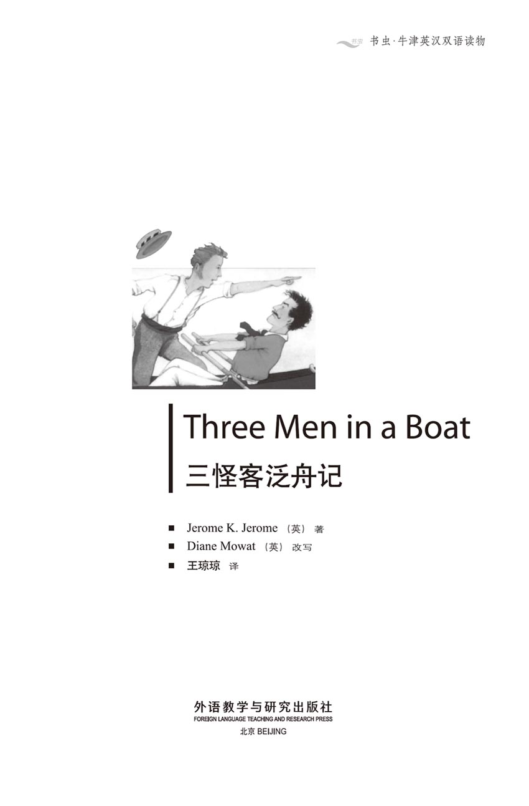
版权页
京权图字01-97-0349
Originally published by Oxford University Press, Great Clarendon Street, Oxford. © 1990
This edition is licensed for sale in the People's Republic of China only and not for export therefrom.
'Oxford' is a registered trademark of Oxford University Press.
图书在版编目（CIP）数据
三怪客泛舟记 = Three Men in a Boat／（英）杰尔姆（Jerome, J. K.）著；（英）莫厄特（Mowat, D.）改写；王琼琼译．—北京：外语教学与研究出版社，1997（2014.9 重印）
（书虫·牛津英汉双语读物）
ISBN 978-7-5600-1303-9
Ⅰ．三… Ⅱ．①杰… ②莫… ③王… Ⅲ．小说—对照读物—英、汉 Ⅳ．H319.4：I
中国版本图书馆CIP数据核字（97）第18049号
出版人： 蔡剑峰
责任编辑：王霖霖
出版发行：外语教学与研究出版社
社 址：北京市西三环北路19号（100089）
网 址：http://www.fltrp.com
版 次：1998年1月第1版
书 号：ISBN 978-7-5600-1303-9
* * *
凡侵权、盗版书籍线索，请联系我社法律事务部
举报电话：（010）88817519
电子邮箱：banquan@fltrp.com
法律顾问：立方律师事务所 刘旭东律师
中咨律师事务所 殷 斌律师
简 介
简 介
这本书不是一本不朽的游记：讲的既不是横渡大洋的危险航行，也不是沿着亚马孙河的漂流探险，只不过是次小小的旅行，乘着一只小小的船。但是不管怎么说也算是次经历吧，是你、我，或者随便是谁都会遇到的……返航之后，我们便会讲起有趣的故事……
谁是这次旅行的主人公呢？有乔治、哈里斯和“杰”（当然还有“元帅”，它是一只狗）。不论在什么地方，什么时候都能遇到这样的三个年轻人。他们掉进水里，把东西弄丢，吵架，又笑着和好，互相讲故事……他们个个有远大的抱负，热情也很高，可就是到了早上谁也起不来。他们都想当伟大的探险家，可事实上，只要一下雨，他们还是愿意呆在暖和的火炉边，坐在舒适的椅子里。
那我们的主人公在河上的经历到底怎么样呢？他们学会在篝火上煎鸡蛋了吗？学会不用启罐器就把罐头打开了吗？这就是他们的故事，三个怪客和一只狗在河上泛舟的故事。
杰罗姆·K·杰罗姆（1895—1927）写过许多著名小说和剧本。他非常喜欢划船，也喜欢泰晤士河。他这本最著名的幽默小说《三怪客泛舟记》讲的就是他和朋友们的亲身经历。
目录
chapter-a109_ 1 We decide to go on holiday
Chapter 1
We decide to go on holiday
There were four of us — George, and William Samuel Harris, and myself, and Montmorency. We were sitting in my room, and we were smoking and talking about how bad we were — ill, I mean, of course.
We were all feeling in poor health, and we were getting quite worried about it. Harris said that he felt really bad sometimes, and he did not know what he was doing. And then George said that he felt bad, too, and that he did not know what he was doing either. With me it was my heart. I knew it was my heart because I had read something in a magazine about the symptoms of a bad heart. I had all of them.
It is a most extraordinary thing, but every time I read about an illness, I realize that I have it too — and that my symptoms are very bad! In fact, my health has always been a worry, I remember...
One day I had a little health problem, and I went to the British Museum Library to read about it. I took the book off the library shelf, and I began to read. After some time, I turned over the page and I began to read about another illness. I don't remember the name of the illness, but I know it was something really terrible. I read about half a page — and then I knew that I had that disease too.
I sat there for a time, cold with horror. Slowly, I began to turn over more pages. I came to a disease which was worse than the last one. I began to read about it and, as I expected, I had that disease too. Then I began to get really interested in myself, so I went back to the beginning of the book. I started with the letter 'a' and I read from 'a' to 'z'. I found that there was only one disease which I did not have. This made me a little unhappy. Why didn't I have that disease too?
When I walked into that reading-room, I was a happy, healthy young man. When I left I was a very sick man, close to death...
But I was talking about my heart—nobody understood how ill I really was. I had this bad heart when I was a boy. It was with me all the time. I knew that it was my heart because I had all the symptoms of a bad heart. The main symptom was that I did not want to work. Of course, nobody understood that the problem was my heart. Doctors were not so clever then. They just thought that I was lazy!
'Why, you lazy boy, you,' they used to say. 'Get up and do some work for once in your life!' They did not understand that I was ill.
And they did not give me medicine for this illness — they hit me on the side of the head. It is very strange, but those blows on my head often made the illness go away for a time. Sometimes just one blow made the sickness disappear and made me want to start work immediately...
Anyway, that evening, George and William Harris and I sat there for half an hour, and described our illnesses to each other. I explained to George and William Harris how I felt when I got up in the morning. William Harris told us how he felt when he went to bed. Then George stood in front of the fire, and, with great feeling, he showed us how he felt in the night.
George always thinks he is ill, but really, there is never anything the matter with him, you know.
At that moment Mrs Poppets, my housekeeper, knocked on the door. She wanted to know if we were ready to have supper.
We smiled sadly at each other, and then we said that perhaps we should try to eat something. Harris said that a little food helped to prevent illness. So Mrs Poppets brought the supper in. We sat down at the table, and for half an hour we managed to play with some steak and chips — and with a large cake that Mrs Poppets had made.
When we had made ourselves eat something, we filled our glasses, and we lit our pipes. Then we began to talk about our health again. We were not quite sure what was the matter with us. However, we were all quite certain of one thing — we had been doing too much work.
'We need a rest,' Harris said.
'A rest and a change,' George added.
I agreed with George, and I said that perhaps we could go to the country. We could find a nice, quiet place and we could sit in the warm summer sun. We could go somewhere peaceful, far away from other people.
Harris said that he thought that would be awful. He added that he had been to a place like that once. Everyone went to bed at eight o'clock, and he had to walk for an hour to buy cigarettes and a newspaper.
'No,' Harris said. 'If you want a rest and a change, then the sea is best.'
I said that this was a terrible idea. A sea trip is fine if you are going for a month or two — but not for a week. I know what it is like...
You start out on Monday and you think that you are going to enjoy yourself. You wave goodbye happily to your friends. You walk up and down on the ship, like Captain Cook, Sir Francis Drake or Christopher Columbus. On Tuesday you wish that you had not come. On Wednesday, Thursday and Friday you wish that you were dead. On Saturday you are able to drink something. You begin to smile a little at the kind people who ask you how you are. On Sunday you start to walk again, and you eat a little. And on Monday morning, as you stand and wait to get off the ship — you begin to enjoy yourself.
I remember that a friend of mine once took a short sea trip from London to Liverpool for his health. He bought a return ticket, but, when he got to Liverpool, he sold it and he came back by train...
So I was against the sea trip — not for myself, you understand. I am never seasick. But I was afraid for George. George said he would be fine. In fact, he said he would quite like it, but he thought that Harris and I would both be ill. Harris said he was never seasick. In fact, he had often tried to be ill, but he had not succeeded. It is very strange, but, when you are on land, you never meet anybody who has ever been seasick!
So George said, 'Well, let's go up the river, then.' He added, 'We'll have fresh air on the river. The hard work on the boat will make us hungry, so we'll enjoy our food. We'll sleep well, too.'
Harris replied, 'Well, you never have any trouble sleeping, anyway. In fact, you're always going to sleep!'
But, in the end, Harris agreed that it was a good idea. I thought that it was a good idea, too. The only one who did not like the idea was Montmorency.
'It's different for me,' his face said. 'You like it, but I don't! There's nothing for me to do. I don't smoke. I don't like looking at the trees and the flowers, and when. I'm asleep you'll play about with the boat and I'll fall over the side!'
Montmorency's idea of a good time is to collect together all the most awful dogs he can find and then go round the town, looking for other awful dogs to fight.
But we were three to one, so we decided to go anyway.
Montmorency [mɔŋməurɔŋˈsi] French aristocrat and Marshal of French Army. （1493-1567）．法国陆军元帅、弗兰西斯一世、亨利二世和查理九世的三朝重臣，曾镇压波尔多反抗盐税的叛乱（1548），在与胡格诺派的战争中负伤战死。他一家公侯辈出，是豪门望族。
symptom n. a sign of disease. 症状。
read about look up or consult (a book in order to find out). 查阅。
come to reach; find by chance. 发现。
blow n. hitting someone or something hard. 敲击。
go away leave. 离去。
be the matter with be wrong with. 有了毛病。
housekeeper n. person employed to manage the affairs of a household. 管家。
play with amuse oneself with. 以……自娱。
chip n. strip cut from an apple, a potato, etc. 薯条。
wave goodbye make a gesture with one's hand to say goodbye. 挥手告别。
Captain Cook James Cook（1728-1779）, British navigator and explorer. 库科，英国航海家及探险家。
Sir Francis Drake (1540?-1596), British navigator and admiral. 杜雷克，英国航海家及海军将军。
Christopher Columbus (1451-1506), Italian navigator, who discovered American Continent in 1492. 哥仑布，意大利航海家，于1492年发现美洲。
Liverpool a port in the northwest of England. 利物浦。
seasick adj. sick, inclined to vomit, from the motion of a ship. 晕船的。
fresh adj. newly made; cool. 新鲜的；凉爽的。
awful adj. terrible; (colloq.) very bad. 可怕的；糟糕。
决定去渡假
1 决定去渡假
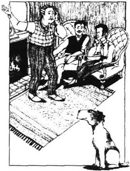
我们一伙是四个——乔治，威廉·塞缪尔·哈里斯，我，还有“元帅”。那天，大伙儿坐在我的房间里，抽烟、聊天，谈到我们的近况有多糟糕——当然我指的是病得多糟糕。
大家都感到浑身不舒服，心里直发慌。哈里斯说他常常觉得十分难受，不知道自己在干些什么。乔治说，他也经常发昏，不知道自己在干什么。至于我，是心脏病，因为我在一本杂志上看到过心脏有病的症状，我全都有。
说来真怪，每次看到有关各种疾病的情况，我就意识到自己也有——而且还病得很重。坦率地说，我的身体一直令人担心。我还记得……
有一次我有点儿小毛病，就去了大英博物馆查查医书。我从架子上拿下书，翻起来。不一会儿，翻到第二页，又看到另一种病。我记不清叫什么名字，但我知道是种极其凶险的不治之症。半页还没看完，我断定自己也得了这种病。
我坐在那儿，害怕得一阵阵发冷。接着又慢慢翻了几页，看到比前一个更可怕的病。读了症状，不出所料，我也有这个病。于是我开始对自己可能有的病感兴趣了，便翻到开头，从字母“a”一直查到“z”，发现只有一种病我没有，心中还多少有点伤心，我怎么没把那个病也得了呢？
进阅览室的时候我还是快乐而健康的年轻人，可出来的时候已经是病魔缠身，离死神不远了。
回头再说说我的心脏——没人知道我病得有多重。小时候，我的心脏就不好，这么多年来，这病一直没有离身。是心脏有病，肯定没错，因为所有病症我都有，主要一条是不愿意干活。当然，他们都不知道这是我心脏有病的缘故。那时候医生也不大高明。在他们看来，我得了懒病。
“哼！你这个懒家伙，”他们常这么说，“快起来！你就不能干点儿正经活？！”他们哪里明白我有病啊！
还有，他们不给我吃药，还敲我脑袋，说来也奇怪，敲几下的确管用，病往往就好一会儿，有时敲一下，病就没了，我马上开始想干活儿了。
书归正传，那天晚上我们在屋里坐了半个小时，彼此诉说患病的痛楚。我对乔治和哈里斯讲早晨起床时有多么难受；哈里斯告诉我们他睡觉时有多么难受；而乔治站在火炉前，滔滔不绝地说着他晚上有多么难受。
乔治总以为自己有病，可你知道，其实根本没有那回事。
这时候，管家波贝丝太太敲了敲门，问我们是不是准备吃晚饭。
我们彼此苦笑了一下，说没办法，勉强吃点什么吧。哈里斯说吃点儿东西可以抵抗疾病。波贝丝太太把饭端进来，我们坐在桌边，足足有半个小时，把牛排和薯条摆弄来，摆弄去，还有波贝丝太太做的蛋糕。
好不容易强迫自己吃了点儿什么，我们又斟满了酒，点上烟斗，继续讨论我们的健康问题。到底得了什么病，我们也不清楚，但有一点大家都确定的是——我们都劳累过度。
“我们需要休息。”哈里斯说。
“休息，还要换个环境。”乔治补充道。
我完全同意乔治的建议，我们或许可以去乡下，找一个美丽、幽静的地方，远离尘嚣，享受夏天明媚的阳光。
哈里斯说这主意可不怎么样。他说以前去过这样的地方，大家八点钟就得去睡觉，要买香烟和报纸得走一个小时。
“我不同意，”哈里斯说，“要休息、换个环境的话，海上旅行是最好不过了。”
我说海上旅行的主意简直太可怕了，要是去一两个月还可以，如果只有一个星期可没意思。我知道那会是怎么样……
星期一出发的时候，你满心想着到海上享受一番，高高兴兴地和岸上的朋友挥手告别，在船上上上下下地走，好像自己成了库克船长，弗兰西斯·杜雷克爵士或哥伦布。星期二，你就有点儿后悔了，希望没来这一趟。星期三、四、五，你觉得生不如死。星期六稍稍能喝点东西；好心的旅客问起你的情况，你也能冲他们笑一下了。星期天，你开始走动走动，吃点儿东西。又到星期一的早晨，你站在船舷上准备上岸了，这才感到海上旅行有意思。
我记得有次一个朋友休养身体去短期旅行。他买了从伦敦到利物浦的双程船票，可一到利物浦，他立刻卖掉船票，后来自己坐火车回来了。
所以，我坚决反对去海上旅行——当然这并不是为我自己，我是从来不晕船的。我是担心乔治。可乔治却说他没事，他倒是很喜欢这个主意，但是他怕哈里斯和我会病倒。可哈里斯说他从来不晕船，坦白说，他倒总想生病，可就是总不成功。真是怪事，在陆地上，你甭想碰到哪个人说自己晕船。
乔治说：“好吧，咱们还是到河上游玩玩吧。”他又说，“河上也有新鲜空气，划划船，我们一会儿就饿了，这样既增进食欲又能睡得香甜。”
哈里斯答道：“哼！你就没有睡不着的时候。直说了吧，你总昏昏欲睡的。”
不过，哈里斯最终还是同意这个主意不错，我也认为是个好点子。唯一不喜欢这个想法的是“元帅”。
“你们想得倒挺美，”它摆出一副面孔，“你们喜欢，我可不喜欢！在河上我没什么事好干。我又不抽烟，又不喜欢看什么树啊，花啊的。况且，我睡觉的时候你们还一个劲儿地在船上玩，我会摔到河里去的！”
“元帅”脑子里最妙的事不过是把所有的癞皮狗聚齐，在城里瞎转，找另外一群癞皮狗开战。
最后，三比一，我们还是决定出发了。
chapter-a109_ 2 We start to make plans
Chapter 2
We start to make plans
We pulled out the maps and we discussed plans. We decided to start on the following Saturday. Harris and I would go down to Kingston in the morning and take the boat up to Chertsey, but George could not leave the City until the afternoon. (George goes to sleep at a bank from ten o'clock until four o'clock from Monday to Friday. On Saturday they wake him up and put him out onto the street at two o'clock.) So George was going to meet us at Chertsey.
The next question was where to sleep at night.
George and I did not want to sleep in hotels at night. We wanted to sleep outside. 'How beautiful,' we said, 'in the country, by the river, with the birds, the flowers and the trees all around us!'
I can imagine it easily...
At the end of the day, night comes and the world is peaceful and calm. Our little boat moves silently into some quiet little corner on the river. There we put up our tent, and we cook and eat our simple supper. Then we fill our pipes and we sit and talk quietly. Sometimes we stop for a moment or two and we listen to the water as it plays gently against the boat. The silver moon shines down on us and our heads are full of beautiful thoughts. We sit in silence for a time. We do not want to speak. Then we laugh quietly, put away our pipes, say 'Goodnight' and go to bed. The peaceful sound of the water against the boat sends us to sleep — and we dream. We dream that the world is young again...
'And what about when it rains?' Harris said.
He was right. When it rains, you do not enjoy living in tents.
I thought about it again...
It is evening. You are very wet. There is a lot of water in the boat and everything in it is wet, too. You find a place on the river bank which is not as wet as other places. You get out of the boat, pull out the tent, and two of you try to put it up. Because it is wet, it is very heavy. And then it falls on top of you. You cannot get it off your head, and you get angry. All the time it is raining heavity. It is difficult to put up a tent in good weather. In wet weather it is almost impossible. The other man does not help you. He starts to play about. You get your side of the tent up and begin to tie the ropes to the ground. Just then he pulls the tent from his side, and he destroys all your hard work.
'Here! What do you think you're doing?' you call out.
'What are you doing, you mean,' he answers angrily.
'Don't pull it! You've got it all wrong, you stupid man! 'you cry.
'No, I haven't!' he shouts. 'Let your side go!'
'I tell you, you're wrong!' you scream, and you wish you could get to him to hit him. You pull your side of the tent hard — and pull out all the ropes on his side.
'Ah! The stupid fool!' you hear him say to himself. And then, suddenly, he gives a violent pull — and your side comes out, too. Slowly, you start to go round to his side to tell him what you think of him. At the same time, he begins to come round the other way, to tell you what he feels. And you follow each other round and round, and you shout at each other — until the tent falls down. And there you are! You stand and look at each other across the tent. At the same time, you both call out, "There you are! What did I tell you?"
Meanwhile, the third man has been trying to get the water out of the boat. The water has run up his arms, and he is wet and angry. Suddenly, he wants to know what you are doing, and why the tent is not up yet.
When, at last, the tent is up, you carry the things out of the boat. Supper is mostly rainwater - rainwater bread, rainwater soup. Happily, you have something strong to drink. This brings back your interest in life until it is time to go to bed.
There you dream that a very large animal has suddenly sat down on you. You wake up and you understand that something terrible has happened. At first, you think that the world has ended. Then you think that this cannot be true. So it must be thieves, or murderers, or fire. No help comes, and all you know is that thousands of people are kicking you, and you cannot breathe.
Somebody else is in trouble, too. You can hear his cries. They are coming from under your bed.
You decide to fight, and you hit out, left and right, with your arms and your legs. You are shouting all the time. At last you find your head in the fresh air. Near you, you see a half-dressed murderer. He is waiting to kill you. You are just going to start fighting him when you see that is Jim.
At the same moment, he sees that it is you.
'Oh, it's you, is it?' he says.
'Yes,' you answer. 'What's happened?'
'The tent has blown down, I think,' he says. 'Where's Bill?'
Then you both shout for Bill. The ground underneath you moves, and a voice says, 'Get off my head!'
The next day you have no voices because you have all caught colds, and all day you argue with each other in angry whispers...
We therefore decided that we would sleep out in tents on fine nights, and in hotels when it rained.
Montmorency was very pleased about this. He does not like peace and quiet. He prefers noise. But he looks so good, so well-behaved. When old ladies and gentlemen look at him, tears come into their eyes.
When he first came to live with me, I thought, 'This dog will not be with me long. He is too good for this world.' But, by the end of the year, he had killed twelve chickens, which I had to pay for... I had pulled him out of a hundred and fourteen street fights... A woman had brought me a dead cat and had called me a murderer. Then I changed my ideas about Montmorency.
We had decided where to sleep, so now we had to discuss what to take with us. We began to argue about this, so we a greed that we had done enough for one night.
peaceful adj. calm; quiet. 宁静的。
tent n. a small house made of cloth over poles. 帐篷。
what about used to ask for information or to get one's opinion. ……怎么样（用于寻问消息或征询意见）。
call out shout 大喊。
"Let your side go." "Don't hold the rope on your side hard." “把你那边松一下。”
scream v. shout with sharp voice. 尖叫。
a violent pull drawing with great force. 猛力一拉。
meanwhile adv. at the same time. 同时。
run up rise to. 到了。
kick v. hit with the foot. 踢。
blow down cause to fall down (by wind). 吹倒。
underneath adv., prep. beneath, below. 在……下面。
"Get off my head." "Step away from my head." “别踩我脑袋！”
whisper n. speaking in low voice. 低声谈话。
well-behaved adj. acting well; obedient. 听话的。
argue v. quarrel; discuss. 争吵；讨论。
开始订计划
2 开始订计划
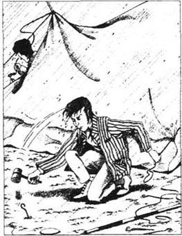
展开地图，我们开始讨论出行计划。
我们准备下星期六出发。早上哈里斯和我先到金斯顿，从那儿把船划到彻特西和乔治碰头。但乔治下午才能离开伦敦城。（因为乔治周一到周五要在银行从上午十点“睡”到下午四点，只有在周六下午两点他们才把他叫醒，撵到街上来。）所以，我们决定到彻特西和乔治碰头。
下一个问题是晚上在哪儿歇脚。
乔治和我一致主张露营而不想睡在旅馆里。我们说露营多么逍遥自在，“在乡间的小河畔，小鸟，鲜花，树木环绕在我们周围。”
我简直能想象得出那幅情景……
白天渐渐隐去，夜晚悄悄来临，周围一片安宁、静谧，我们的小船轻轻滑进幽静的河湾。我们在那里支起帐篷，做点简单的晚餐，吃完饭，我们装满烟斗，坐在那儿娓娓清谈。聊一会儿天，我们便歇一会儿，听着河水轻轻拍着小船。银色的月光洒在身上，我们不禁浮想联翩。一时大家端坐在寂静里，心头一番滋味无以言表。我们静静相视一笑，放下烟斗，互道一声晚安，起身去睡觉。河水潺潺，轻拍船舷，送我们入梦。在梦里，世界重新变得年轻……
“可是，要是下起雨来怎么办呢？”哈里斯问。
他说的没错，下雨天露营实在是令人难以消受。
我又联想起来……
你看，天色已晚，你全身已经湿透，船里到处是水，所有东西都打湿了。你在岸上找了一块稍微干一点儿的地方，两个人下了船，把帐篷拖上岸，忙着把它支起来。帐篷浸透了水，异常沉重，突然又倒在你身上，压着你，头也伸不出来。你呢，简直快气疯了，而雨还是瓢泼似的下。本来，天好的时候支帐篷就不容易，而到了雨天，根本没戏。另一个人也不帮你，反而自己找乐子。你这边的帐篷刚支起来，把绳子绑在地上的桩子上，他那边使劲一拉，一下子把你辛辛苦苦干的活全废了。
“喂！你干什么？”你冲他大声喊叫。
“你说，你自己在干什么？”他气呼呼地答道。
“别再扯了，全让你扯乱了，你这头蠢驴！”你又喊道。
“得了，我才没扯呢！”他也喊着，“你那边不能松一松吗？”
“我跟你说，你那样不对！”你尖声吼起来，恨不得走过去揍他一顿。你使劲儿拉你这边的帐篷，一下子把他那边的绳子、桩子都拔了出来。
“咳！你这个傻蛋！”你听着他咕哝着，接着，也猛地一拉，你这边绳子、桩子也出来了。你缓缓地朝他那边走去，要和他理论；与此同时，他也绕过来要和你评是非。于是，两个人隔着帐篷，你追我赶绕着圈儿，互相骂个不停。最后整个帐篷都倒了，你们两个站在那儿，隔着这堆帐篷，互相瞪着眼，又异口同声地叫道：“你看你！我是怎么对你说的？”
这时候，还有第三个人，一直从小船里往外舀水。水已经到胳膊了，他也是湿漉漉的，一肚子气，他不明白你们在搞什么名堂，怎么帐篷还没支起来。
最后，帐篷算是支起来了，你把东西从船里搬出来。晚餐主要是雨水——雨水面包，雨水汤。幸亏你还有点儿够劲儿的东西喝，使你恢复对人生的兴趣，然后酣然入梦。
在梦里，你觉得有一只庞大的动物突然坐在你身上，你一下子醒了，意识到有什么可怕的事发生了。起初你还以为世界末日到了，后来想想又觉得不大可能，那么一定是盗窃、谋杀或者火灾。谁也不来救助，你只觉得成千上万的人在踢你，简直透不过气来。
还有人也遇到了麻烦，你听见从床底下传来的叫喊声。
你决心反抗，手脚并用，左踢右抡，嘴里乱叫乱嚷，终于发现自己脑袋露出来了。离你不远，你看见那个坏蛋了，半裸着身子，正等着要杀你。你正要和他拼命，才发现坏蛋不是别人，正是吉姆。
这时候，他也认清了是你。
“哦，原来是你！没错吧？”他说。
“正是我！”你答道，“出什么事了？”
“我想帐篷给刮倒了吧，”他说，“比尔哪里去了？”
于是两个人扯起嗓子喊比尔。你脚下有什么东西在动，一个声音传出来：“别踩我的脑袋！”
第二天，你们都说不出话来，因为都感冒了。大家整天都气呼呼的，低声粗气，还不停地互相争辩着。
所以我们决定天气好就在外面露营，下雨就住旅馆。
“元帅”对此非常高兴。它生来不喜欢安静、寂寞的生活，而喜欢吵吵闹闹的场面。但它看着讨人喜欢、举止也得体，那些老太太、老先生们看着它那副模样，准会感动得掉下泪来。
当它刚来和我住的时候，我想：“这只小狗不会在我这儿久留的，对于这个世界来讲，它实在是太好了。”可是到了年底，它已经杀死了人家十二只小鸡，我不得不替它赔偿损失……它在街上打了一百一十四次架，每次我都得把它拉开……一位妇女抱着一只给它咬死的猫来找我，叫我是凶手。于是我对“元帅”改变了看法。
我们已经决定了在哪里住宿，现在的问题是要讨论该带些什么东西，于是大家又争执起来。最后我们都说这一个晚上发的议论可真不少哇！
chapter-a109_ 3 We decide what to take
Chapter 3
We decide what to take
The following evening, we discussed what we wanted to take with us. Harris said, 'Now get me a piece of pa per, J., and write everything down. George, you get a pencil, and I'll make the list.'
That's Harris — he tells everybody what to do, and they do all the work. I remember that my Uncle Podger was like Harris...
Everybody in the house had to help when Uncle Podger did a job. When they bought a picture once, Aunt Podger asked, 'Now, where shall we put this?'
'Oh, I'll do it. Don't worry about it. I'll do it all myself,' he said. And then he took off his coat to begin. He sent one of the girls out to buy some nails, and then he sent one of the boys to tell her how big the nails ought to be. 'Now, Bill, you go and get my hammer,' he shouted. 'And bring me a ruler, Tom. And Jim, I need a ladder — and a kitchen chair, too. Maria, you stay here to hold the light — and Tom, come here! You can give me the picture.'
Then he lifted the picture up... and he dropped it. He tried to catch the glass... and he cut himslef. He looked for something to put round his finger, and he could not find anything. So he danced round the house, and he shouted at everybody.
Half an hour later, the finger had been tied up, they had bought new glass, and everything was ready. Uncle Podger tried again. Everybody stood round him. They were all ready to help. Two people held the chair, a third helped him to get on it, a fourth gave him a nail, and a fifth passed him the hammer. He took the nail... and he dropped it!
'There,' he said sadly. 'Now the nail's gone.'
So everybody got down on the ground to look for it. At last we found the nail, but then he lost the hammer.
'Where's the hammer? What did I do with the hammer? There are seven of you there, and you don't know where the hammer is!'
We found the hammer for him, but then he lost the place on the wall where he was going to put the picture. So each one of us had to get up on the chair and look for the place. And each one of us thought that it was a different place. Then Uncle Podger tried again himself. This time he fell off the chair on to the piano. His head and his body hit the piano at the same time. The music was beautiful, but Uncle Podger's words were not! Aunt Maria was not pleased. She said that she did. not want the children to listen to those terrible words. She added calmly, 'The next time that you are going to put a picture on the wall, please tell me. Then I can arrange to go and spend a week with my mother.'
Uncle Podger got up and tried again, and at midnight the picture was on the wall. It was not very straight, and everyone was very tired and unhappy. Uncle Podger looked at the picture proudly and said, 'You see, it was only a little job!'...
Harris is like that. So I told him that George would write down the list, and I would do the work. He could get the pencil and the paper.
The first list was too long. So we started again.
'Now,' George said, 'we don't want to take a tent. We can put a cover over the boat at night. It will be like a little house, lovely and warm and comfortable. It's much easier than a tent.'
Then we made a list of all the clothes we needed. George told us that he knew all about this kind of thing — and we believed him. We discovered later that this was not true.
Next we talked about the food.
'First, breakfast,' George began. 'We need eggs, cold meat, tea, bread and butter, of course. And for dinner we can take cold chicken legs, tomatoes, cold meat, fruit, cakes, chocolate... We can drink water.' Then he added, 'And we can take a bottle of whisky, too — for when we are sick, you know.'
We did not wish to talk about being sick. But later, we were glad we had taken the whisky.
So we made our list, and it was a long one.
take off remove. 脱掉。
nail n. a small thin piece of metal with a sharp end. 钉子。
hammer n. a piece of wood with a heavy metal head used for hitting things. 锤子。
ladder n wooden structure used for climbing up or down walls. 梯子。
tie up fasten or bind. 包扎。
piano n. a large musical instrument with black and white keys that you press to make music. 钢琴。
arrange to do to make plans; provide or prepare. 打算，计划。
straight adj. upright, erect, not bent, bowed. 直的。
准备行装
3 准备行装
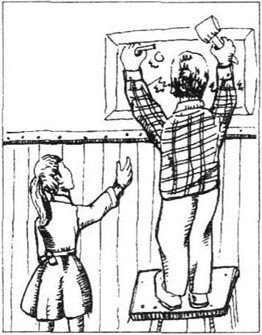
第二天晚上，我们又开始讨论需要带些什么东西。哈里斯说：“来，给我一张纸，杰，你来把需要的东西都记下来。乔治，你去拿笔，我就可以列清单了。”
这是哈里斯一贯的作风：他总是告诉大家要干什么活儿，让大家忙得不亦乐乎。我不由记起来浦杰叔叔也和哈里斯一样……
浦杰叔叔要是干点儿什么活儿，一家人都得帮忙。有一次他们买了一幅画，浦杰婶婶问：“把画挂在什么地方？”
“哦，我来吧，你们谁也甭操心，全交给我一个人得了。”他说着，脱掉外套，就要干活。他先叫了一个女孩子去买钉子，马上又支使一个男孩子赶去告诉她钉子要多大的。“去，比尔，给我拿把锤子，”他喊着，“汤姆，去把尺子拿来。还有吉姆，我还需要架梯子——再要一把厨房里的椅子。玛丽亚，别走开，给我拿着灯照亮——还有，汤姆，快过来，你把画递给我。”
说着，他把画举起来，没想到一下又给掉了，他赶紧去抓玻璃，却又把手割破了。他想找点儿东西把手指包上，可什么也找不着：就这样，他满屋子乱蹦乱跳，冲着每一个人嚷嚷。
他花了半个小时才把手指包扎好；随后玻璃也买回来了，万事俱备。浦杰叔叔要再干一次，大家都围着他站着，随时帮忙。两个人扶着椅子，第三个人扶他上去，第四个人给他递钉子，第五个人把锤子递给他。他拿着钉子……可这回钉子又掉了。
“你瞧，”他伤心地说，“钉子又掉了。”
于是大家全趴在地上找。最后好不容易找到了钉子，可接着又把锤子弄没了。
“锤子哪里去了？我刚才拿锤子干嘛来着？你们七个人都在这儿，居然没一个知道锤子哪儿去了！”
大家把锤子找到了给他，可是他刚才在墙上准备挂画的记号又找不着了。大家轮流爬上椅子去找那个地方，可每个人找的都不一样。浦杰叔叔自己又找了一遍，结果这次从椅子上摔下去，摔在钢琴上，整个身体，从头到脚都压在上面。音乐真是美妙，但叔叔说的话可不那么好听。玛丽亚姑姑不高兴了，她说她可不想让孩子们听见那些粗话。接着又冷冷地加了一句：“往后你再挂个画什么的，最好先告诉我一声，我好收拾东西去妈妈家住上一星期。”
浦杰叔叔爬上椅子，又试一次。直到半夜，画才算是挂上去了，可还不太直，一家人也都精疲力尽，满心不悦。浦杰叔叔却看着画，不无骄傲地说：“瞧瞧，小事一桩。”……
哈里斯就像浦杰叔叔那样。所以我对他说，由乔治列清单，我来说要什么，而他去拿笔和纸。
我们列的第一个清单太长了，只得又重新开始。
“你瞧，”乔治发话了，“咱们不要带帐篷了，晚上可以在船上支个顶篷，当盖子，就像个小房子，又暖和，又可爱，又舒服，却比帐篷省事儿多了。”
我们又列了个单子，记下要带的衣服。乔治告诉我们这些事他全通晓——我们信了他的话，后来才发现并非像他说的那样。
再接下来，我们讨论吃的东西。
“首先是早餐，”乔治说，“当然了，要有鸡蛋、冷肉、茶、面包和黄油。正餐可以带上冷鸡腿、西红柿、冷肉、水果、蛋糕、巧克力……再喝点水。”说着他又加了一句：“咱们带上一瓶威士忌吧——病了就用得着了。”
我们都不愿意谈到生病。但是后来，我们还真庆幸带了威士忌。
这就是我们列的单子，长长的一串。
chapter-a109_ 4 We pack
Chapter 4
We pack
The next day, which was Friday, we collected all these things together. In the evening we met to pack.
We got a big suitcase for the clothes. There were two large baskets with lids, for the food and for the pans and things to cook with. We moved the table over to the window. Then we put everything in the middle of the floor.
After we had done that, we sat there and we looked at it.
I said that I would pack.
I think that I am very good at packing. It is one of the things that I do best. So I told the others that I would organize it. They agreed to this idea too quickly. That was rather strange. George lit his pipe and sat back in the armchair. Harris put his feet on the table and lit a cigarette.
This was not, of course, what I had expected. When I said that I would organize it, I meant that I would tell them what to do. Then I would sit and watch them do it.
However, I said nothing, and I started to pack the clothes. It took much longer than I had expected, but in the end it was finished. I sat on the suitcase and closed it. George and Harris watched me with great interest.
'Aren't you going to put the boots in?' Harris asked.
I looked round, and saw the boots. Why did Harris wait until I had closed the suitcase?
George laughed quietly.
I opened the suitcase, and I put the boots in. It was not easy! And just as I was going to close the suitcase again, an awful idea came to me. Had I packed my toothbrush?
Of course, I had to look for it, and, of course, I could not find it. I had to take everything out again. I found George's toothbrush. I found Harris's toothbrush, but I could not find mine. In the end, I found it inside a boot.
I packed everything again.
When I had finished, George asked if the soap was in the suitcase. I said I did not care about the soap. I threw down the lid of the suitcase, and I closed it again. Then I found my cigarettes were inside it.
I finished the suitcase at five past ten, and the food was still not packed!
Harris said, 'We have to start the holiday in twelve hours. Perhaps George and I had better do the rest of the packing.'
I agreed, and I sat down.
They began quite happily. I said nothing. I only waited. I looked at all the plates and cups, and bottles, and tomatoes, and cakes, etc. I felt that it was soon going to get exciting.
It did. They started by breaking a cup. That was just to show you what they could do and to get you interested. Then Harris packed a pan on top of a tomato and... well, they had to pick out the tomato with a teaspoon.
And then it was George's turn, and he stepped on the butter. I did not say anything, but I got up and went over to the table and watched them. This annoyed them more than anything, and it made them worried and excited. They stepped on things, and they put things behind them. And then they could not find them when they wanted them. They packed soft things at the bottom of the basket, and then put heavy things on top of them.
Then it got worse. After George got the butter off his shoe, they tried to put it in the teapot. At first they could not get it in. Then, when they did get it in, they decided that the teapot was the wrong place. But they could not get the butter out again. However, in the end they did manage to get it out and they put it down on a chair. Harris sat on it, and when he stood up, the butter stuck to his trousers. Then they looked for the butter all over the room. In the end, George got behind Harris, and he saw it.
'There it is!' he cried.
'Where?' Harris asked, and he turned round quickly.
'Stand still!' George shouted.
When they got the butter off Harris, they packed it in the teapot again.
Montmorency was in all this, of course. He sat down on things just when George and Harris were going to pack them; he put his leg into the sugar; he ran away with the teaspoons. He pretended that the oranges were rats, and he got into the food basket and killed three of them.
The packing was completed at ten to one in the morning, and we all went to bed. George said, 'What time shall I wake you two?'
Harris said, 'Seven.'
I said 'Six.'
In the end we said, 'Wake us at half past six, George.'
pack v. to put one's clothes, belongings, etc. into luggage for a trip. 整理，收拾行囊。
suitcase n. a flat, rectangular traveling bag. 旅行箱
pipe n. a tube with a small bowl at one end, in which tobacco, etc. is smoked. 烟斗。
cigarette n. a small round-shaped of finely cut smoking tobacco rolled in thin paper. 烟卷。
boot n. protective covering, of leather, rubber, cloth, etc., for wearing on the foot and part or all of the leg: in England, shoes are called boots. 靴子。
care about to worry about. 在意，关心，在乎。
annoy v. to irritate, to make angry. 激怒，惹恼。
teapot n. a pot in which tea is made. 茶壶。
manage to do to try one's best to do something successfully. 做成，费劲地完成。
stick to to fix or fasten one thing to another thing. 粘住。
rat n. a little grey animal with a long tail. 鼠。
收拾行装
4 收拾行装
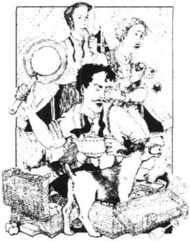
第二天是星期五，晚上我们把那些东西堆在一起，准备收拾。
我们带一个大箱子装衣服，还有两个有盖的篮子，一个装食品，一个装锅和烹饪的东西。我们把桌子搬到窗口，然后把东西一股脑儿地堆在中间的地板上。
做完这些事，我们坐在那儿，愣愣地看着这一堆东西。
我说，打包的事就交给我了。
我对自己的打包能力十分自负，觉得是我最拿手的一件事，所以我对他们俩说我来负责。他们马上欣然同意，毫不犹豫，速度之快令我感到有点儿蹊跷。乔治点上了烟斗，把自己埋在扶手椅中；哈里斯把脚跷到桌子上，也点了一支香烟。
当然这可出乎我的意料。我的打算是我来组织这个工作，我告诉他们怎么干，然后我坐在那儿看他们干。
尽管如此，我还是二话没说开始装衣服。花的时间可真不少，但我终于还是干完了。我坐在箱子上合住盖。乔治和哈里斯颇有兴致地望着我。
“这些靴子你要不要装进去呀？”哈里斯问。
我回头一看，看见了靴子。这个哈里斯，怎么非等我盖上箱子才说？
乔治悄悄笑了起来。
我又把箱子打开，把靴子装进去，真不容易啊。我刚想合上箱子盖，忽然又冒出一个糟糕的念头，我的牙刷装进去了没有？
毫无疑问，我还得找，可我怎么都找不着。我把所有的东西都掏出来，找到了乔治的牙刷，也找到了哈里斯的牙刷，偏偏就是没有我的。最后还是在一只靴子里找到了。
我把东西重新装好。
等到收拾完了，乔治问肥皂装了没有。我才不管什么肥皂不肥皂的呢！我使劲儿把盖子压下去，合上，这才发现我的烟又给装进去了。
收拾完箱子已经是晚上十点过五分了，可是吃的东西还没装呢！
哈里斯说：“咱们还有十二个小时就要出发了，其余的东西还是让我和乔治来收拾吧。”
我没有意见，坐在一旁看他们干。
他们一开始还挺高兴。我一言不发，走着瞧吧。看着一大堆盘子、杯子、瓶子、西红柿和蛋糕什么的，我觉得不一会儿就会有好戏看了。
果不其然。开始是杯子打了，这无非想显示他们很能干，好引起你的兴趣。接着哈里斯把锅压在西红柿上，瞧，只得用茶匙把西红柿一点一点舀出来。
轮到乔治了。他一脚踩在黄油上面。我一声没吭，起身走到桌子边上看看究竟怎么回事。这更让他们恼怒、烦恼和激动，一会儿又踩着什么了；一会儿把东西搁到身后，转身又忘了，找不着；一会儿把软的东西放到篮子底，把重的压在上面了。
形势越发糟糕了。乔治把黄油从鞋上拿下来，他们使劲儿把它塞进茶壶里。开始还装不进去，后来装进去了，他们才恍然大悟这儿可不是放黄油的好地方。这次又取不出来了。终于取出来了，他们把黄油放在椅子上，哈里斯一屁股坐上去，起身时全粘到裤子上了。他们四处乱找，后来乔治转到哈里斯背后，才发现了黄油。
“在这儿！”他叫道。
“在哪儿呀？”哈里斯问，不住地转着身子。
“别动！”乔治吼道。
他们总算把黄油从身上取下来，又装进茶壶里去了。
这样的大混乱局面里，当然少不了“元帅”。乔治和哈里斯装东西的时候，它就坐在上面，一会儿把脚伸进糖罐里，一会儿叼着勺子到处跑，一会儿假装橘子是老鼠，蹿进装食品的篮子里——一下消灭了三个。
凌晨一点差十分，行李收拾完毕，大家准备去睡觉。乔治问：“明天什么时候叫醒你们？”
哈里斯说：“七点。”
我说：“六点。”
最后我们说：“乔治，六点半叫我们。”
chapter-a109_ 5 We start our holiday
Chapter 5
We start our holiday
It was Mrs Poppets who woke me the next morning. She said, 'Do you know that it's nearly nine o'clock, sir?'
'What!' I cried, and I jumped out of bed. I woke Harris and told him.
He said, 'I thought you told us to get up at six?'
'I did,' I answered.
'Well, why didn't you wake me then?' he asked. 'Now we won't be on the water until after twelve o'clock.'
Then we remembered. We looked at George. He was still asleep. Now, it makes me very angry when I see another man asleep and I am awake. We decided to wake George. We ran across the room, and we pulled the bedclothes off him. Harris hit him with a shoe, and I shouted in his ear. He woke up.
'Wh... aa... t,' he began.
'Get up, you fat, lazy thing!' Harris shouted. 'It's a quarter to ten!'
Then we began to get ready, and we remembered that we had packed the toothbrushes. So we had to go downstairs to get them out of the suitcase.
Finally, we were ready and Harris said, 'We need a good breakfast inside us today.' While we were eating, George got the newspaper and read us interesting pieces from it — pieces about people who had been killed on the river, and interesting reports about the weather. The weather report for that day said, 'Rain, cold, wet to fine, some thunder, and an east wind'. But weather reports make me angry anyway. They always tell you what the weather was like yesterday, or the day before. It is never today's weather. It is always wrong. I remember that one autumn I went on holiday...
On that holiday, the weather reports in the newspaper were always wrong. On Monday it said, 'Heavy rain, with thunder'. So we did not go out that day. All day people passed our house. They were all going out, happy and smiling. The sun was shining and there were no clouds in the sky.
'Ah,' we said, as we watched them, 'they'll be very wet when they come back, though.'
And we laughed. Then we sat down by the fire and read our books.
At twelve o'clock the room was too hot, and the sun was still shining.
'Well, it will rain this afternoon, then,' we told ourselves.
The rain never came.
The next morning, we read that it was going to be sunny and very hot. So we dressed in light clothes, and we went out. Half an hour later, it began to rain hard, and a very cold wind blew up. And this went on all day. We came home with colds, and we went to bed...
But on the morning of our holiday it was bright and sunny, and George could not make us unhappy. So he went to work.
Harris and I finished the rest of the breakfast. Then we carried all our luggage into the road. We tried to get a taxi. Usually taxis come along every three minutes. In fact, there are usually too many taxis. However, that morning we waited twenty minutes for a taxi. A crowd of interested people collected to watch us. I think it was because we had so much luggage. There was a big suitcase, a small bag, two baskets, several blankets, some fruit in a brown paper bag, some pans, some umbrellas and four or five coats and raincoats. After a very long time, a taxi arrived and stopped for us. We packed our things into it, kicked two of Montmorency's friends out of the taxi, and started on our holiday. The crowd of people waved goodbye to us.
asleep adj. in a condition of sleep. 睡着的。
bedclothes n. the blankets and sheets on a bed. 床罩，床单。
thunder n. the sound that follows a flash of lightening. 雷声。
going out leaving one's house to enjoy oneself outside. 外出。
dress in light clothes not dress much, or put on many heavy clothes but had fewer clothes. 穿得少。
blow up to arise and become more intense. 慢慢增强
luggage n. suitcases, valises, trunks, etc.; baggage. 行李。
开始度假
5 开始度假

第二天早晨，是波贝丝太太把我叫醒的。她叫道：“先生，知道吗，快九点了！”
“什么？”我叫了一声，跳下床，叫醒哈里斯，告诉他快九点了。
他却说：“我还以为你让咱们六点起床呢。”
“没错！”我回答。
“那你怎么不叫我起来？”他问，“瞧，十二点以前咱们甭想上船了。”
说到这儿我们才明白过来，看看乔治，他还在睡觉呢！看到别人还在酣睡，我却起了床，我立刻怒火中烧。我们决定把乔治弄醒。我俩“噌”地蹿过去，一下子把被单拽了下来，哈里斯用鞋打他，我对着他的耳朵大喊，他才悠悠醒转过来。
“干—什—么？”他说话了。
“起床了，你这个又肥又懒的家伙！”哈里斯说，“差一刻就十点了！”
接着我们洗漱，准备停当，这才想起来牙刷已经都装起来了。大家下楼又从箱子里翻出来。
终于一切都安顿好了。哈里斯说：“今天早餐咱们要好好吃一顿才会有劲儿。”一边吃着饭，乔治一边拿出报纸给大家念些有趣的新闻——有人在河里淹死了；还有天气预报，预报说：“有雨，寒冷，由阴湿转晴，有雷，风向偏东。”天气预报总是让我十分恼火，他们告诉你的天气都是和昨天的、前天的相同，就是和今天的情况不一样，总是错误的消息。我还记得一年秋天，我去度假……
那一次度假，报纸上天气预报总是不准。星期一预报说：“预计今日有雨，伴有雷电。”因此我们没有出去。整整一天，眼看着大家都出了门，兴高采烈地笑着，天上阳光灿烂，万里无云。
“哈哈！”我们看着那些人说，“去吧，反正回来的时候肯定给淋得湿透。”
我们笑起来，坐到火炉边看书。
中午十二点了，屋里热得让人受不了，太阳还是那么明亮耀眼。
“你看着吧，下午准下雨。”我们彼此安慰着说。
雨却始终没有来。
第二天早晨，报上讲会是个很热的大晴天。我们穿得很少就出了门。刚过了半个小时，大雨倾盆，加上阵阵的刺骨寒风，整天没有停。回到家里我们都伤风了，赶紧上床睡觉……
但我们度假的那天早晨，天气晴朗，阳光普照，乔治也没法烦我们了，所以他上班去了。
哈里斯和我吃完早餐，把所有的行李搬到路上，我们想等辆马车。通常三分钟就会来一辆。马车很多，可那天早晨我们等了足足二十分钟也不见一辆。一群人围过来，兴致勃勃地看着我们俩，我想是因为行李太多的缘故：一个大箱子，一个小包，两个篮子，几张毯子，几只锅，几把伞，四五件外套和雨衣，牛皮袋里有些水果。过了好长时间，才来了一辆马车。我们把东西放到车上，把“元帅”的两个朋友轰出车外，便开始了我们的旅行，一大群人向我们挥手道别。
chapter-a109_ 6 On the river
Chapter 6
On the river
At Kingston our boat was waiting for us. Harris and I put all our things into it, and we moved off along the River Thames. Montmorency was at the front of the boat. We travelled along the river without any accidents. Well, there was only one little accident. That was when the boat hit the river bank, and Harris fell over backwards. When we came to Hampton Court Palace, Harris asked me if I had ever been in the maze there. He told me a story about it...
He went into the maze once, to show a friend the way. He had studied a map of the maze, and so he knew it was very easy to get out of it again. Harris said to his friend, 'We'll just go in and walk around for ten minutes, and then we'll come out and get some lunch. It's easy, you see. You just keep taking the first turning to the right.'
Soon after they had gone in, they met some people. These people said that they had been there for three quarters of an hour. They said they wanted to get out. Harris said, 'Follow me! I'm going out myself in about ten minutes.'
The people all said that Harris was very kind, and they began to follow him.
As they were going along, they collected other people who wanted to get out. In the end, all the people in the maze were following Harris. There were about twenty of them. Some of them had thought that they were never going to see their friends and their families again. One woman was carrying a baby. She held on to Harris's arm because she did not want to lose him.
Harris continued to turn to the right, but it seemed to be a long way. At last, Harris's friend said to him, 'This must be a very big maze.'
'One of the biggest in Europe,' Harris answered.
'Yes, it must be,' his friend continued, 'because we've walked about three kilometres already.'
Harris began to think that it was rather strange, but he went on. After some time, they came to a piece of cake on the ground. Harris's friend said that they had passed the piece of cake earlier. Harris replied, 'No! Impossible!'
The woman with the baby said, 'No, I took it from the baby, and I threw it there myself. It was just before we met you. In fact, I wish I never had met you,' she added.
Harris got angry then, and he took out his map. He showed it to the people, but one man said, 'A map's no good when you don't know where you are.'
So then Harris said that the best thing was to go back to the entrance and start again. Everybody agreed, and they all turned and followed Harris the other way.
After ten minutes they found themselves in the centre of the maze. Harris was going to pretend that he wanted to be in the centre, but the crowd looked dangerous. So Harris decided to say that it was an accident.
Anyway, now they knew where they were on the map, and it looked easy. So they all started off again for the third time.
And three minutes later, they were back in the centre again.
After that, every time they tried again, they arrived back in the centre. Harris took out his map again, but this made the crowd angry. They told him what to do with his map. Harris felt that the crowd was not very grateful to him.
Then they all started to shout, and in the end the keeper came. He climbed up a ladder, and he called to them, 'Wait, there! I'll come and get you.'
But he was a young keeper, and he was new to the job, so when he got into the maze, he could not find them. Then he got lost. From time to time, they saw him as he ran past, on the other side of the hedge. He shouted, 'Wait there! I'm coming!'
Then, five minutes later, he appeared again in the same place. He asked them why they had moved.
They had to wait for one of the old keepers to come back from lunch and let them out...
Harris said that it was a fine maze, and we agreed that we would try to get George into it on the way back.
Thames a river in Southern England, flowing eastward through London to the North Sea. 英国一条著名河流，注入北海。泰晤士河。
bank (river) n. the ground on each side of a river. 岸。
accident n. a happening that is not expected, foreseen, or intended. 意外。
maze n. lots of high hedges with narrow paths between them; people have to find their way in and out, usually get lost. 迷宫。
hold on to continue to take, to catch. 抓住，抓牢。
entrance n. a place for entering; door, gate; etc.. 入口。
crowd n. a large number of people gathered closely together. 一大群人。
dangerous adj. full of danger; likely to cause injury, pain, etc.; unsafe. 危险的。
grateful adj. feeling or expressing gratitude; thankful; appreciative. 感激的。
keeper n. a person who takes care of something. 管理员。
hedge n. a 'wall' of small trees which have been planted close together. 围墙，一般是种一排低矮的树木构成一道屏障。
在河上
6 在河上
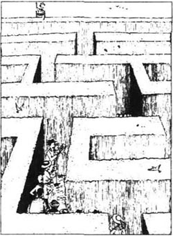
船在金斯顿等我们。哈里斯和我把行李搬上船，然后沿着泰晤士河出发了，“元帅”站在船头。一路上没有什么意外。嗯，只有一个小小的意外：小船撞到了岸上，哈里斯仰面摔了一跤。当我们经过汉普顿宫，哈里斯问我有没有到过那里的迷宫，还给我讲起以前的故事……
他进过一次迷宫，是为了给朋友当向导。他曾经仔细研究过迷宫的地图，因此他以为走出来是件十分简单的事。他对朋友说：“咱们进去只消十分钟就能走出来，然后去吃午饭。这没什么难的。你瞧，只要记住总是在第一个转弯处往右走就行了。”
他们一进去就遇到不少人。他们说已经在里面转了三刻钟，非常想出去。哈里斯说：“跟我来，我自己只消十分钟就能走出去。”
他们一听，都说哈里斯心真好，大家便跟着他走。
他们一边绕，一路上又带上了不少人，也是想走出迷宫的。后来迷宫里所有的人都跟着哈里斯走，至少有二十人，其中有的人甚至担心今生今世再也见不到自己的朋友和家人了。一个妇女抱着孩子，紧紧揪着哈里斯的胳膊，生怕把他丢了。
哈里斯坚持向右转，可路看起来越走越长。最后哈里斯的朋友说：“这个迷宫实在大得很。”
“是全欧洲最大的呢！”哈里斯回答说。
“是，一点儿不错，”他的朋友接着说，“咱们差不多走了快三公里了。”
哈里斯也开始觉得有点儿奇怪，可是他还坚持这样走。走了一会儿，人们看到地上有块蛋糕，哈里斯的朋友说他们刚才曾经走过这里。哈里斯说：“不，不可能的！”
抱着孩子的女人说：“肯定是的。是我从孩子手里拿下来的，是我亲手扔在这儿的，就在刚遇到你之前。哼！我可真希望从来没碰上你！”她又加了一句。
哈里斯气坏了，拿出地图，给人们看。可一个人却说：“可你连咱们在哪儿都不知道，要地图又有什么用呢？”
因此哈里斯说最好的办法就是回到入口处重新开始。大家一致同意，便向后转，又跟着哈里斯向相反的方向走去。
十分钟以后，他们发现走到迷宫中间了。哈里斯本打算哄骗大家他是有意这样走的，可是他看到众怒难犯，哈里斯只好说这是个意外。
不管怎么说，大家总算知道自己现在在地图上什么位置了，那么一切简单多了，他们又第三次重新开始。
可是三分钟以后，他们又回到原来的中心。
后来，每一次努力都是以回到迷宫的中心而告终。哈里斯又拿出地图来看，这下子大家全火了，他们叫他拿了这幅地图见鬼去吧！哈里斯觉得这群人真不知道感恩戴德。
最后人们吵成一团，后来还是管理员来了。他爬上梯子，对人群叫道：“在那儿等着，我来帮你们出去。”
可是这个年轻人偏偏又是个新手，他进了迷宫找不到那群人，结果自己也迷了路。大家不时看见他在围墙那边跑来跑去，还大声叫喊着：“你们都别动，我来了！”
五分钟以后，他又在原来的老地方出现了，还问大家为什么又动了位置。
他们只好等着那位年老的管理员吃完中午饭回来，才把他们领出去。
哈里斯说那个迷宫的确很不错，我们一致同意回来的路上让乔治也进迷宫逛一逛。
chapter-a109_ 7 Harris gets angry
Chapter 7
Harris gets angry
Harris told me about the maze as we were passing through Molesey lock. Our boat was the only one in the lock that day. Usually it is very busy. On Sundays, when the weather is fine, there are boats everywhere. Everybody comes down to the river. They wear brightly coloured clothes, and the river is full of colour — yellow, and blue, and orange, and green, and white, and red and pink.
At Hampton Harris wanted to get out and have a look at the church there, but I refused to stop. I have never liked visiting churches, but Harris loves them. He said, 'I've looked forward to visiting Hampton Church ever since we decided to make this trip.' He added, 'I only came on the trip because I thought we were going there!'
I reminded him about George. I said, 'We've got to get the boat up to Shepperton by five o'clock to meet him.'
Then Harris got angry with George. 'Why does George have to play around all day? Why has he left us with this big, heavy boat to tow up and down the river? Why couldn't George come and do some work? Why didn't he take a day's holiday and come down with us? The bank! Ha! What good is he at the bank?' He stopped for a moment and then he continued, 'I never see him doing any work there. He sits behind a bit of glass all day, and he pretends to do something. What's the good of a man behind a bit of glass? I have to work. Why can't George work? What does he do at the bank? What good are banks, anyway? They take all your money, and then, when you write out a cheque, they send it back! They say you've spent all your money! What's the good of that? If George was here, we could go to see that church. Anyway, I don't believe he's at the bank. He's playing about somewhere, that's what he's doing. And we've got to do all the work!... I'm going to get out and have a drink!'
I told him that there were no pubs nearby, and then he started shouting about the river. 'What good is the river? We'll all die of thirst! No pubs!' (It's better to let Harris go on shouting when he gets angry. Then he gets tired, and he is quiet afterwards.)
I reminded him that we had water in the boat. Then he started shouting about water. He said drinks like that made people ill.
However, he said that he must drink something. He climbed onto the seat and he bent down to get the bottle out of the basket. It was at the bottom, and he had to bend down, lower and lower. At the same time, he was trying to steer the boat, and he pulled the wrong rope. The boat turned sharply and bumped into the bank of the river, and Harris fell into the basket. He stood there on his head, and he held on to the side of the boat. His legs were in the air. He could not move in case he fell over. He had to stay there until I could catch his legs and pull him back. And that made him more angry.
We stopped under the trees by Kempton Park, and we had lunch. It is very pretty there, on the grass by the river, under the trees. We had an excellent meal, and Harris calmed down and began to enjoy himself again.
By half past three, we had reached Sunbury lock. Then we went up to Walton, which is quite an interesting place. Julius Caesar stayed there with his soldiers. Queen Elizabeth I, she was there too. You can never get away from that woman. She was everywhere.
Next we came to Halliford and Shepperton. There is an old church at Shepperton, and I was worried in case Harris wanted to go and visit it. I saw him looking towards it as we came near, but I moved the boat quickly, and Harris's cap fell into the water. We had to get it back, of course. Luckily, he was very angry with me, and so he forgot about his church.
As we came up to the lock at Weybridge, we saw something brightly coloured on one of the lock gates. When we looked closer, we saw that it was George. Montmorency started to bark madly. I shouted, and Harris called out wildly. George waved his cap and yelled back to us. The lock-keeper ran out because he thought someone had fallen in the water. He seemed annoyed when he saw that no one had fallen in.
lock n. a place on a river between gates where boats are raised or lowered to a different level. 水闸。
remind v. cause a person to remember; to remind sb. of sth or remind sb. about sth. 提醒。
cheque n. a written order to a bank to pay the amount of money stated. 支票。
pub n. a bar, an inn. 小酒馆。
steer v. to turn a wheel or handle to guide a boat, car, etc. 掌舵。
rope n. very thick, strong string, used for tying things. 绳子。
Julius Caesar 100-44 B.C.; Roman statesman and general; as director, extended and unified the Roman Empire. 裘力斯·凯撒，罗马政治家，将军，统治者，扩大并统一了罗马帝国。
Queen Elizabeth I 1533-1603; daughter of Henry Ⅷ and Anne Boleyn; queen of England (1558-1603) 伊丽莎白一世，亨利八世的女儿，英国女王，在她统治时期，英国开始走向全盛。
cap n. a kind of hat worn by men. 帽子，男帽。
bark n. the short quick sound that a dog makes. 狗吠。
lock-keeper n. a person who looks after a lock on a river 看闸人。
哈里斯生气了
7 哈里斯生气了
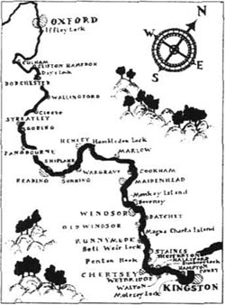
哈里斯谈起在迷宫的事时，我们正驶过莫尔赛水闸。那天在水闸就我们一只船。通常那儿很拥挤。星期天或者天气好的话，那儿到处是船。人们都到河上来，穿着色彩艳丽的衣服，一片五光十色——黄的、蓝的、桔红、绿的、白的、红的、粉的。
到了汉普顿，哈里斯想上岸去看看那里的教堂，可我拒绝停下来，我从来不喜欢瞻仰教堂，而哈里斯却为之心仪已久。他说：“咱们计划出游的时候我就一直盼着来看看汉普顿教堂。”他又说：“我之所以来就是因为我想我们要到这儿。”
我提醒他别忘了乔治。我告诉他：“咱们还要在五点钟前赶到谢泼顿和他会合呢。”
于是，哈里斯一下把怒气都转向乔治。“为什么他可以整天晃荡，把这只又笨又沉的船扔下让我们拖上岸又推下水？为什么乔治不能来干点儿活呢？为什么不能休一天假，和我们一起行动呢？那个银行！哈！他在那儿有什么好的？”停了一会儿，他又接着说，“我可从来没有见过他在银行里干什么正经事。整天坐在一小块玻璃窗后面，好像在干工作。一个男子汉在那样一块玻璃窗后能有什么出息？我得工作谋生，为什么乔治就不能呢？他在银行做什么？再说银行又有什么好？他们拿了你的钱，可是你开张支票取钱，他们却又给你退回来，说你的钱已经花光了。那都有什么用？要是乔治在这里，我们还能去看看教堂，我根本不相信他在银行里，他一定到什么地方找乐去了，这才像他干的事，把苦差事都丢给我们！……不行，我得上岸去喝一杯。”
我告诉他附近没有小酒馆，他又转过来冲着河咆哮起来。“河有什么好？我们会渴死，连小酒馆也没有。”（哈里斯生气的时候，最好的办法就是让他喊下去。过一会儿，喊累了，他也就安静了。）
我提醒他船上有水喝，他又骂起水来，说人喝了那样的水一定会生病。
可是他说非得喝点儿什么不可。他爬上座位，弯下腰在篮子里找瓶子。可瓶子在篮子底，他还得往下弯腰，越弯越低，与此同时又要掌舵，因此拉错了绳子。小船猛地打了个转儿，一下撞在岸上，哈里斯一头栽在篮子里，脑袋倒立着，双手撑在船边，两腿竖在空中。他一动不敢动，生怕翻到水里去。就这样倒立了半天。后来我抱住他的双腿，才把他拖了出来。可是他更加怒火中烧，暴跳如雷。
我们的船停在肯普顿公园附近的绿阴之下，就在那儿开始吃午餐。我们坐在河边的草地上，坐在树下，景致很美。午餐十分丰盛，哈里斯安静下来，心情也舒畅了。
三点半钟，我们到了森伯里水闸，接着又上行到沃尔顿。那是个很有趣的地方，凯撒曾和他的士兵在那里呆过，伊丽莎白一世也是常客。对了，你永远别想甩掉这位女士，她无所不在。
接下去我们到了哈利福德和谢泼顿。谢泼顿有一座古老的教堂，我真担心，怕哈里斯又要去参观。我看他一直呆呆地望着，就把船划得飞快，结果哈里斯的帽子掉进了水里，我们又折回去。幸运的是，他光顾和我生气了，把教堂的事儿给丢在脑后。
再往上走，到了韦布里奇水闸，我们一眼就看到一扇闸门上有个色彩鲜艳的东西在动，靠近仔细一看才发现是乔治。“元帅”汪汪乱叫着，我尖声叫喊着，哈里斯也手舞足蹈地大声吼着。乔治挥舞着帽子，冲我们打招呼。水闸管理员也跑了出来，还以为有人掉到水里了。可一看没事，他似乎颇为恼怒。
chapter-a109_ 8 George starts work
Chapter 8
George starts work
We decided that now George was there, he was going to do some work. He did not want to work, of course. 'I've had a bad day at the bank,' he explained.
Harris, who is sometimes a little cruel, said, 'Ah! And now you're going to have a bad time on the river for a change. A change is good for you. Come on! Get out of the boat and tow!'
George could not refuse, really, but he did say, 'Perhaps it would be better if I stayed in the boat and prepared the meal. You two can tow the boat.' Then he added, 'It's very difficult to prepare a meal and you both look tired.'
Our only reply was to give him the rope. So he started walking, and he pulled the boat behind him.
Sometimes people forget that they are towing a boat, and later, George told us a story about this...
George had once seen a man and a young lady who were walking by the side of the river. They were pulling a rope behind them and they were talking to each other. They did not notice that there was no boat on the end of the rope. Of course, they probably had a boat on the end of the rope when they started out. But it had disappeared. The two young people were not worried about this. They had their rope. They did not seem to care that there was no boat. George was going to call out to tell them about it. But, just then, he had an idea. He took hold of the rope, and he tied it to his own boat. Then he and his three fat, heavy friends sat in the back of their boat, and lit their pipes. And that young man and young woman towed George and his friends up to Marlow. It was when they reached the lock that they looked back. Suddenly they understood that they had been towing the wrong boat. George said, 'I've never seen anyone look as sad as those two young people then!'
The young man was a bit annoyed. In fact, he was probably going to say something angry to George and his friends. But just then, the young woman cried wildly, 'Oh, Henry, then where's Aunt Mary?'...
'Did they ever get the old lady back?' Harris asked. George replied that he did not know.
But the most exciting thing of all is to let girls tow your boat. Let me tell you about it...
First of all, you need three girls. You always need three girls to tow a boat. Two of them hold the rope, and the other one runs here and there and laughs all the time.
They usually begin by tying themselves up in the rope. They get it round their legs, and then they have to sit down to untie it. Next, they get it round their necks. When they finally get it right, they always start by running. They pull the boat much too fast. After a few minutes, they are tired, and so they stop suddenly. They all sit down on the grass, and they start to laugh. Meanwhile, your boat goes out into the middle of the river, and it starts to turn round. Then they stand up and are surprised.
'Oh, look!' they say. 'The boat's gone into the middle of the river!'
After this, they pull you along quite well for a time. Then one of them decides to stop for something else. So the boat runs aground in shallow water near the river bank. You jump up, and you push the boat off into deep water. You shout to them, 'Don't stop!'
'Yes, what's the matter?' they shout back.
'Don't stop!' you cry loudly.
'Don't what?'
'Don't stop... go on... go on!'
'Go back, Emily, and see what they want,' one of them says.
And Emily comes back and asks, 'What is it? Is anything wrong? '
'No!' you shout. 'It's all right! But go on! Don't stop!'
'Why not?'
'Because we can't steer the boat if you stop.'
'Why not?'
'You must keep the boat moving!'
'Oh, all right. I'll tell them. Are we doing everything else all right?'
'Oh, yes, very nicely — but don't stop!'
'I see. Oh, give me my hat, please. It's over there.'
You find her hat, and you give it to her. But then another girl comes. She thinks she will have her hat, too. And then they take Mary's hat for her. Mary does not want it, so they bring it back. Then they want a comb. It is about twenty minutes before they start again. Then, at the next corner, they see a cow. You have to stop, and leave the boat, to chase the cow away...
Anyway, this time it was George who towed us on to Penton Hook. There we discussed the important question of where to spend the night. We had decided to sleep on the boat. Therefore we could stay there, or we could go on past Staines. In the end, we decided to continue to Runnymede.
Later we all wished we had stopped at Penton Hook.
cruel adj. without mercy or pity. 残酷的，残忍的。
tow v. to pull a boat, car, etc. along behind you with a rope. 拉纤。
disappear v. go out of sight, go out of existence. 消失，不见了。
tie up wrap up with strings. 缠住。
surprised a. with surprise. 惊讶的。
aground adv. touching the bottom of the river in shallow water. 搁浅。
shallow adj. not deep. 浅的。
comb n. a strip of bone, plastic, metal, etc. with teeth, which is passed through the hair to arrange or clean it. 梳子。
乔治开始干活
8 乔治开始干活
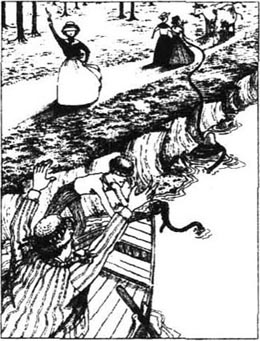
我们说既然乔治现在来了，就得干点儿活了。他当然不想干，还推托说：“我在银行已经够辛苦的了。”
可哈里斯有时真是冷酷无情，他冷冷地说：“啊哈！那你就换换工作，到河上来辛苦辛苦吧，这对你有好处。去，下船拉纤去！”
说真的，乔治没理由拒绝，可他却说：“我还是在船上吧，我来做饭，你们俩拉纤。”说完又加了一句：“做饭可不容易，你们俩都累了，还是我干吧。”
我们给他的唯一回答是把绳子扔给他。他乖乖地拉起了纤，一边走，一边拉着身后的小船。
有时候，人们会忘记自己身后还拉着船。后来，乔治给我们讲了一段故事，说的就是这事……
有一次，乔治看见一个男人和一个年轻姑娘在河边散步。他们一边拉着身后的绳子，一边聊天，根本没注意到绳子另一端没有拴住船。显然，那纤绳原来是拴着一条船的，但后来却不见了踪影。两个年轻人也没在意，反正手里拽着绳子，他们也不管后面有没有船。乔治正想喊，提醒他们一声，可是他忽然有了一个绝妙的主意。他抓住绳子，系在自己的船上，然后他和三个又胖又重的伙伴坐到船尾，点了烟斗，悠然抽了起来。那一对年轻人就这样把他们四个一直拉到马洛。后来船到水闸时，那一对回过头看了看，这才明白自己拉错了船。乔治说：“我再没见过比他们更难过的表情了。”
那个男的有点火了，可能想骂乔治和他的朋友们一顿。就在那时，姑娘失声喊道：“哎呀！亨利，那玛丽姑姑到哪里去了？”
“后来老太太找到了吗？”哈里斯问。乔治说他也不清楚。
然而最有趣的莫过于姑娘们为你拉纤了。我来讲给你们听吧……
首先，你需要三个姑娘。拉一艘船总是需要三个姑娘。两个拉着纤绳，还有一个在周围跑个不停，笑上一路。
通常，她们一开始就给绳子缠住。一会儿缠住了腿，就得坐下来解开；一会儿又缠住了脖子。好不容易都弄停当了，她们就爱跑着走，船也给拉得飞快。没跑几分钟，她们又累了，一下子又停住脚，坐在草地上，笑成一团。就在这当间儿，你的船跑到了河中央，开始打转。她们却站起来，满脸惊讶之色。
“哦！你瞧，”她们说，“船跑到河心去了。”
接着，她们总算好好地拉上一段。突然有一位想干点儿别的，不想拉了，于是小船冲进岸边浅水，搁浅了。你们跳起身，把船推回到深水。你高声喊叫：“别停下来！”
“喂，出什么事啦？”她们高声应道。
“别停下！”你大声吼着。
“别什么？”
“别停——继续拉——继续！”
“爱米莉，快回去看看他们到底要什么。”其中一位说道。
接着爱米莉就跑回来，问你们：“怎么了？出什么事了？”
“没事！”你又喊道，“什么事都没有！就是继续拉！别停下！”
“为什么不能停？”
“你们要是停下来，我们就没法掌舵了。”
“为什么不能？”
“你们要让船老动着才行啊！”
“哦，那好吧，我去告诉她们。别的事我们干得还行吧？”
“哦，是的，好极了，可就是别停下来。”
“我明白了。哦，请把我的帽子递给我，就在那边。”
你找到帽子递给她。这时候，另一个姑娘走过来，也要帽子。接着她们把玛丽的帽子也给她拿过去，可玛丽不戴，她们又送回来。一会儿，她们又想要梳子。这样至少过了二十分钟，才又重新上路。可就在下一个路口，她们又碰到一头母牛，没法子只得停下船，你们下了船，去把母牛赶跑……
不管怎么说，这次是乔治把我们拉到了潘登河湾。在那儿我们讨论了在哪儿过夜这个重要问题。大家原来计划在船上睡觉，这样我们要么可以停泊在那里，要么就继续走到斯泰恩斯。最后，我们决定继续划，一直到兰尼米德歇脚。
可是后来我们都希望要是早点停在潘登河湾就好了。
chapter-a109_ 9 Our first night on the boat
Chapter 9
Our first night on the boat
After some time, Harris and I began to think that Bell Weir lock had disappeared. 'Perhaps someone has taken it away,' we said. George had towed the boat as far as Staines, and we had towed it from there. It seemed to get heavier and heavier. We began to think that we were right and that someone had moved the lock. But, finally, at half past seven, we reached it and got through it. By now we just wanted to eat and to go to bed. So we stopped before we reached Magna Charta Island. It was quite a pretty place and we tied our boat to a big tree.
We were looking forward to having something to eat then, but George said, 'No! It's better to put the cover on the boat first, before it gets too dark. All our work will be finished then. We'll be able to sit down and enjoy our meal.'
None of us had realized that it would be so difficult to fix the cover. There were five pieces of metal and you put these into special holes on the side of the boat. The pieces of metal were half circles, and when you had put them into the holes, you just had to pull the cover over them.
We thought it would probably take about ten minutes.
We were wrong.
We took the pieces of metal, and we began to drop them into their holes. You would not expect this to be dangerous work, but it was.
First of all, the pieces of metal would not fit into their holes. We had to jump on them, and kick them, and beat them. And when we got one in, we found that it was the wrong piece of metal for those holes. So we had to take it out again.
At last we got them finished. Then we only had to put the cover on. George took one end, and he fastened it over the front of the boat. Harris stood in the middle of the boat to take the cover from George. I stayed at the back of the boat to take the end of the cover from Harris.
George did his job all right, but it was new work to Harris and he did everything wrong.
I do not know how he did it, and Harris himself could not explain it later. After ten minutes of really hard work, he was inside the cover. He could not get out. He fought the cover hard — and knocked George over. Then George got angry and he began to fight, too. George could not get out of the cover either.
At the time, I did not know anything about all this. I did not understand what was happening anyway. They had told Montmorency and me to stand and wait. So Montmorency and I stood there and waited. We could see that the cover was moving about quite violently. However, we thought that it was all necessary for the job. We did nothing because they had told us to wait.
We also heard many bad words coming from under the cover. Montmorency and I decided that this was because the job was very difficult.
We waited for some time, but everything seemed to get worse. Finally George's head appeared over the side of the boat. It said,
'We can't breathe under here! Why don't you help us, you great stupid thing!'
So I went and helped them. Harris's face was nearly black, so I was just in time.
It took another half an hour after that to fix the cover. And then we started to prepare supper. We needed some hot water to make tea, so we put the water on the stove at the front of the boar, and we went to the back. We pretended that we were not interested in the water at all. We wanted it to think we did not care if it got hot or not. We began to get the other things out.
That is the only way to get hot water on the river. If the water knows that you are waiting for it, it will never get hot. You have to go away and begin your meal without it. You must not look at it. Then you will soon hear it making a lot of noise, because it wants to be made into tea.
It is also a good idea to talk very loudly to each other. You must say that you do not want any tea, that you do not need any tea, and that you are not going to have any tea. You get very near the water and you shout,
'I don't want any tea. Do you, George?'
And George shouts back, 'Oh, no. I don't like tea. We'll have milk.'
This makes the water very angry, and it gets hot very fast.
We did this, and, when everything else was ready, the tea was ready, too. Then we sat down to have supper. We really wanted that supper. We needed that supper. And for thirty-five minutes nobody on the boat spoke.
After supper, we sat and smiled at each other. We smiled at Montmorency, too. We loved everybody. We sat back, we lit our pipes, and we began to talk.
George told us about something very funny that happened to his father once...
When he was young, George's father was travelling with a friend. One night they stopped at a little hotel. They spent the evening there with some other young men. After a very happy evening they went to bed. It was late, and, by that time, they (George's father and George's father's friend) were feeling quite happy themselves. Anyway, they were going to sleep in the same room, but in different beds. When they got into the room, they dropped their light, which went out. So they had to undress and get into bed in the dark. They thought they were getting into separate beds. However, because they could not see, they both got into the same one. One of them got in with his head at the top of the bed. The other one got in on the other side of the bed. He lay with his feet by the first one's head.
Nobody spoke for a moment. Then George's father said, 'Joe!'
'What's the matter, Tom?' Joe replied, from the other end of the bed.
'Why, there's a man in my bed,' George's father said. 'His feet are here, next to me.'
'Well, that's very strange, Tom,' Joe answered, 'but there's a man in my bed, too.'
'What are you going to do?' George's father asked.
'Well, I'm going to throw him out,' Joe replied.
'So am I,' George's father said, bravely.
There was a short fight, and then there were two heavy bangs on the floor. After a moment or two, a rather sad voice said, 'I say, Tom!'
'Yes?'
'How have you got on?'
'Well, to tell the truth, my man's thrown me out.'
'My man's thrown me out, too... I say, this isn't a very good hotel, is it?'...
At the end of George's story, Harris asked, 'What was the name of the hotel?'
'The Riverside,' George replied. 'Why?'
'Ah, it isn't the same hotel, then, 'Harris answered.
'What do you mean?' George asked.
'Well, it's strange,' Harris said, 'but the same thing happened to my father once. I've often heard him tell the story.'
After that, we went to bed, but I slept very badly.
Magna Charta Island the great charter that King John of England was forced by the English barons to grant at Runnymede, June 15, 1215; it guaranteed certain civil and political liberties to the English people. Thereafter, the island was called Magna Charta Island. 大宪章岛，在兰尼米德，1215年6月15日，英国约翰王被贵族公爵所迫，在那里签订了“大宪章”，对英国的封建贵族作了让步，保障了英国人民的民权和政治自由。
fasten v. made firm, attach, join, connect; fix firmly in place. 拧紧，上紧。
violently adv. extremely strong, intensely. 剧烈地。
stove n. a small oil cooker, used for cooking outdoors. 炉子，油炉，户外旅行时可以用来做饭。
noise n. any loud, discordant, or disagreeable sound. 嗓音。
undress v. take off one's clothes. 脱衣。
separate adj. different, divided, not joined, set apart. 分开的。
在船上的第一夜
9 在船上的第一夜
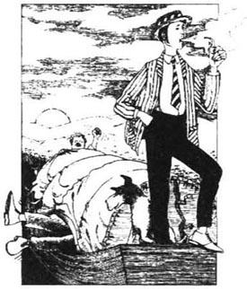
不久，哈里斯和我开始怀疑贝尔·韦尔水闸消失了。“也许有谁给挪走了吧。”我们说。因为乔治把我们一直拉到斯泰恩斯，接着我们又拉。船越来越沉，我们认为自己的怀疑没错，肯定有人把水闸挪走了。一直到晚上七点半，我们终于到了，把船拉了过去。我们那会儿只想吃饭、睡觉，所以还没有到大宪章岛我们便停了下来。找了一个风景如画的地方，把船拴到了大树上。
那时我们都盼着吃点儿什么，可乔治却说：“别忙，最好先把船篷支起来，要不然天就黑了。等到活儿干完了，再坐下来舒舒服服地吃一顿晚餐，”
我们谁也没想到支个船篷竟那么费事，一共有五个半圆形的铁条，你把它们插进船舷特制的小孔里，把篷布拉好，盖上就行了。
我们想这活儿用不了十分钟。
但我们错了。
我们拿起铁条要插到船上相对应的插孔里。谁也没想到那是危险的活儿，但的确如此。
最要命的是那些铁条跟插孔的尺寸根本不符。我们在上面又踩又跳，又踢又打，好不容易插进去了，才发现插错了地方，又得使劲儿拔出来。
终于弄停当了，只要把篷布打开就行了、乔治拿一头，把前端固定在船头。哈里斯站在中间，从乔治那儿接过篷布，我站在船尾，从哈里斯手里接过另一头。
乔治的活儿干得不错，可是哈里斯是个生手，一下子全让他搞乱了。
我不知道他怎么搞的，他自己后来也说不明白。他呼哧呼哧摆弄了十分钟，便把自己裹在篷布里怎么也出不来了。他在篷布底下又踢又拽，把乔治也给掀翻了。乔治也火了，拼命挣扎，终于自己也出不来了。
那时候，我什么情况都不知道，反正我也不懂究竟发生了什么。他们让我和“元帅”站着等，所以我们俩一直站在那儿等着。我们都看见了篷布猛烈翻动着，可我们还以为这是一道必要的工序，因此我们不敢插手。本来嘛，是他们让我们等着的。
我们也听得见篷布底下传来好些骂人的脏话，“元帅”和我都以为那是因为活太难干的缘故。
我们等了半天，情况越来越糟糕。最后乔治的脑袋从船的那一边探出来，开口说道：
“你这个大笨蛋！我们在这儿快闷死了，你不能伸伸手吗？”
因此我走过去搭救他们，哈里斯脸色发青，看来我帮得还挺及时。
又忙了半个小时才把蓬盖支好，然后我们开始弄晚餐我们要用热水沏茶，于是就把水放在船头的炉子上煮，自己到船尾去了，还假装出一副对它根本不感兴趣的样子，让它明白我们才不在乎水什么时候开呢。我们又忙着去干其他的事。
要想在河上烧开水，这是唯一的方法要是水知道你在等着它开，它就永远不会热。你必须走开，去吃你的饭，好像根本不想喝水，甚至瞧都不瞧一眼，那水很快就弄出咕嘟咕嘟的噪音，急于要泡茶了。
还有个好办法就是大声说话，说你一点儿也不想喝茶，不需要沏茶，也不打打算泡茶。你走近水壶，大喊，
“我可不想喝茶。乔治，你呢？”
乔治也喊：“哦，不，我才不喜欢喝茶呢，咱们喝牛奶吧。”
一听此话，水很生气，很快就沸腾了。
我们就是用了这样的手腕。饭做好了，茶也好了，大家坐下来吃晚餐。我们需要的就是这顿晚餐，所以足足有三十五分钟，整个船上鸦雀无声，谁也不说话。
吃过晚饭，我们笑容可掬地坐下来，甚至对“元帅”，我们也是笑容满面，我们觉得每一个人都那么可亲可爱。大家坐着，向后斜靠着，点着烟斗，聊了起来。
乔治说起了他父亲亲身经历的许多有趣的事儿……
乔治父亲年轻时，一次和一个朋友去旅行。一天他们到了一家客栈，晚上和其他一群年轻人一起度过。那晚大家过得很愉快，也睡得很晚。乔治的父亲和那位朋友还有点儿陶陶然，他们打算睡在一个房间里，两张床上。他们走进房间时，蜡烛头掉下来灭了。他们在暗中摸索，脱了衣服，爬上床。他们还以为都上了自己的床，可是因为看不见，还是上了一张床。一个从床头上的，另一个从另一头爬上去，一个的脚正好放在另一个的脑袋旁边。
有一会儿两人都没说话，后来乔治的父亲说：“乔！”
“怎么回事儿？汤姆？”乔从床另外一头回答。
“唉哟，我床上有人，”乔治的父亲说，“他的脚在我旁边。”
“是吗？真是怪事，汤姆，”乔回答说，“我床上可不也有人嘛。”
“那你打算怎么办啊？”乔治的父亲问。
“哼，我要把他给扔出去。”乔说。
“对，我也这么办。”乔治的父亲壮起胆子说。
短兵相接，只听得地上传来“梆梆”两声巨响，过了一会，传来一个悲切的声音。
“我说，汤姆！”
“嗳，我在这儿。”
“你怎么样了？”
“唉，老实对你说吧，我这边那个人把我扔出来了。”
“我这边的人也把我扔出来了……我说，这可不像是家正经客栈，是吧？”……
乔治的故事讲完了，哈里斯问：“那个客栈叫什么名字？”
“河畔客栈，”乔治答道，“怎么了？”
“啊，那不是同一家客栈了。”哈里斯回答说。
“你这话什么意思？”乔治问。
“嗯，真是蹊跷，”哈里斯说，“我父亲也曾遇到过这么一回事，我常听他讲这个故事。”
然后，我们都去上床睡觉，可我睡得特别不踏实。
chapter-a109_ 10 Our first morning
Chapter 10
Our first morning
I woke up at six o'clock the next morning, and I found that George was awake, too. We both tried to go to sleep again, but we could not. This was because we did not need to get up early. We could sleep for another two or three hours. But we both felt we would die if we tried to sleep for another five minutes.
George said that the same thing had happened to him a few months before. He told me a story about it...
At that time George had rooms in the house of a lady called Mrs Gippings. One evening his watch stopped at a quarter past eight. He did not realize this then. When he went to bed, he took off his watch, and he did not look at it.
This happened in the winter, so it was dark in the mornings, anyway. When George woke up, he looked at his watch. It was a quarter past eight.
'Good heavens!' George cried. 'I have to be at the bank by nine o'clock!' And he threw down the watch and jumped out of bed. He had a cold bath and he dressed. Then he ran and looked at his watch. It had started to go again, and it was twenty to nine.
George took his watch and ran downstairs. The dining-room was dark and silent. There was no fire, no breakfast. George was very angry with Mrs G. He decided to tell her this later, in the evening. Then he caught hold of his coat, his hat and his umbrella, and ran to the front door. It was locked! George said that Mrs G. was a lazy old woman. Then he unlocked the door and ran out into the street.
For a few hundred metres he ran as fast as he could. But, suddenly, he noticed that there were not many people about. He also noticed that the shops were not open. It was a very dark and foggy morning. However, it seemed very strange that they had closed the shops because of the fog. He had to go to work, so why should other people stay in bed?
George could see only three people. One of them was a policeman, one was a man who was taking vegetables to the market, and one was a taxi-driver.
George looked at his watch. It was five to nine. For a moment, he stood there without moving. He wondered if he was dreaming. He felt his wrist, and bent down and felt his legs. Then, with his watch in his hand, he went up to the policeman.
'What time is it, please?' he asked the policeman.
'What's the time?' the policeman repeated. 'Well, listen.'
Just then George heard a clock... one... two... three. 'But that's only three times!' George said, when it had finished.
'Well, how many times do you want?' the policeman replied.
'Why, nine, of course,' George said, and he held out his watch to the policeman.
'Do you know where you live?' the policeman asked.
George thought for a minute, and then he told the policeman the address.
'Well, I think you should go back there quietly,' the policeman continued. 'And take your watch with you!'
So George went back.
At first, he thought he would go to bed again. However, he did not like the idea of having to get up again later. So he decided to go to sleep in the armchair.
But he could not get to sleep. He tried to read, but that was no good either. Finally, he put on his coat again, and he went out for a walk.
He felt very lonely and miserable. He met policemen who looked at him strangely. They followed him about. He began to feel that he really had done something wrong. He started to hide in dark corners whenever he saw a policeman.
Of course, then the policemen wanted to know what he was doing. George said, 'Nothing. I'm just going for a walk.' But they did not believe him. In the end, two policemen went back to the house with him. They wanted to know if he really did live there. They watched him go in with his key. Then they stood on the opposite side of the road, and they watched the house.
When he got in, he thought, 'I'll light the fire, and then I'll make some breakfast.' But he made a lot of noise, and he was afraid that Mrs Gippings would wake up. She would hear the noise and think that he was a burglar. Then she would open the window and shout, 'Help! Police!' The two policemen would come and arrest George, and take him away. So he stopped trying to prepare breakfast, and he put on his coat. Then he sat in the armchair and he waited for Mrs Gippings. She came down at half past seven.
George said that, since then, he had never got up too early again...
When George had finished his story, we decided to wake up Harris. It was hard work. In the end we had to use quite a sharp piece of metal. Harris sat up suddenly then. Montmorency had been asleep on Harris's chest, and he went flying across the boat.
After that, we pulled up the cover and we put our heads over the side of the boat. We looked down at the water. The night before, we had decided to get up early. We would throw off the cover and we would jump into the water, with shouts of happiness. Then we would enjoy a long swim.
But now that morning had come, it did not seem to be a very good idea. The water looked wet and cold. The wind felt cold, too.
'Well, who's going to go in for a swim first?' Harris said finally.
Nobody hurried to be the first one. George put his head back inside the boat. Montmorency barked with horror at the idea. Harris said it would be difficult to climb back into the boat again from the water. Then he went back into the boat to look for his trousers.
I did not want to give up the idea absolutely. I decided to go down to the edge of the river, and then splash some water over myself. So I went out on to the river bank, and I began to move carefully along the branch of a tree which was over the water.
It was very cold, and I thought I would not splash water over myself, after all. I would go back into the boat and dress. I turned — and just then the stupid branch broke. The next minute, I was in the middle of the river, with half a litre of the Thames inside me.
'Good heavens! Old J.'s gone in!' Harris said.
'Is it all right?' George called out.
'Lovely,' I replied. 'Why don't you come in?'
But they did not want to.
When I got back to the boat, I was very cold. I wanted to put on my shirt as quickly as possible. By accident, I dropped it into the water. This made me very angry, but George started to laugh. 'I can't see anything to laugh at,' I told George. He just went on laughing! In fact, I never saw a man laugh so much. In the end, I became really angry with him. I told him what I thought about him. He laughed more loudly. And then, just as I was getting the shirt back out of the water, I noticed that it was not my shirt. So I began to laugh, too. I looked at George, who was laughing so much. Then I looked at the wet shirt — and I laughed more and more. Because I was laughing so much, I dropped the shirt in the water again.
'Aren't you going to get it out?' George cried, between his shouts of laughter.
At first I could not answer him, because I was laughing so much. In the end, I managed to say, 'It isn't my shirt. It's yours!'
I have never seen a man's face change so quickly. I tried to make him see that it was very funny, but he did not agree with me.
After that, it was time for breakfast, and we decided to have eggs. Harris said he would cook them. He said he was very good at doing eggs. People who had eaten his eggs never wanted any other food afterwards. 'If they can't get my eggs, they won't eat,' he said, 'and they die.'
So we gave him the pan, and all the eggs which had not broken. 'Go on, then,' we said. 'Begin!'
Harris had some trouble when he tried to break the eggs. He had trouble stopping them from getting onto his trousers. And he had more trouble trying to stop them from going up his arms. Finally, he managed to get about six of the eggs into the pan. Then he sat down and started to cook them.
It seemed to be very difficult work. Whenever he went near the pan, he burnt himself. Then he dropped everything, and danced about, and waved his hands, and shouted. In fact, every time George and I looked at him, he was doing this. At first we thought it was necessary to do this to cook the eggs.
Once Montmorency went and looked into the pan, but he burnt himself. Then he started dancing and shouting, too. It was all very exciting, and George and I were quite sorry when it finished.
realize v. come to know. 意识到。
Good heavens! an expression of surprise or fear. 哦，天那！
foggy adj. full of fog, misty, dim, clouded. 多雾的。
feel one's wrist feel the pulse. 摸了摸脉搏。
address n. place where one lives. 地址。
miserable adj. in a condition of misery; wretched; very unhappy. 痛苦的，忧伤的。
burglar n. a person who commits burglary. 夜间盗贼。
absolutely adv. completely, totally. 完全地。
splash v. to make water fly about and make things wet. 拍水，泼水。
litre n. the basic unit of capacity in the metric system. 升，容量单位。一升水重约一公斤。
funny adj. amusing, laughable. 可笑的，滑稽的。
trouble n. misfortune, mishap, difficult situation. 麻烦，困难。
burn v. to injure by fire. 烫。
第一天早晨
10 第一天早晨
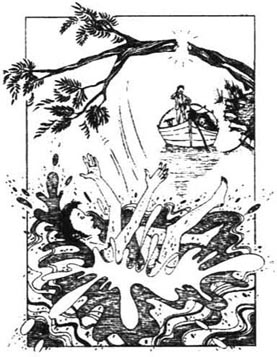
我早晨六点钟醒来，发现乔治也醒了。我们俩都想再睡一会儿，可怎么也睡不着了。这是因为我们不需要早起了，而且还可以再睡上两三个小时。然而，哪怕再多睡五分钟，我们都会觉得立刻就要死了。
乔治说几个月前，他也遇到了这种情况。他给我讲了这样的故事……
那时候，他在吉宾斯太太家租了几个房间。一天晚上，他的表走到八点一刻时停了，可他自己并没有意识到。睡觉的时候，他把表摘了，看也没看一眼。
这是冬天发生的事，因此早上天总是很黑。乔治爬起来一看表：八点一刻。
“我的天哪！”乔治惊叫起来，“我九点钟要赶到银行呢！”说着扔下表，跳下床，匆匆用冷水洗了洗，穿上衣服，急急忙忙跑回去一看表，表又开始走了，现在是差二十分九点？
乔治抓起表，冲下楼。饭厅黑洞洞，静悄悄的，炉子没生，早餐也没做。乔治很生吉宾斯太太的气，晚上回来得好好和她理论理论。他拿上外衣、帽子和雨伞，跑到前门，门居然还锁着！乔治说吉宾斯太太真是个懒得要命的老太婆。他打开门，跑到街上。
他使出全力跑出去几百米，忽然注意到周围没几个人，店铺也没开门。那天早晨雾很大，天很黑，可是店铺要是因为雾大就停止营业，这可够奇怪的。他自己还得去上班，怎么别人就能在床上呆着呢？
乔治一共只见到三个人：一个是警察，一个是推着菜去市场的，还有一个是马车夫。
乔治又看看表，差五分钟九点。他站在那儿呆了一会儿，一动没动，好像还做着梦呢！他数数脉搏，又弯腰摸摸自己的腿。后来，他拿着表上前去问警察。
“请问，现在几点了？”他问警察。
“几点？”警察念叨了一句，“好吧，你听着吧！”
正在这时，钟敲响了。一下，两下，三下。钟不敲了，乔治问：“怎么才敲了三下？”
“对啦！那么你想要敲几下？”警察回了一句。
“九下，当然了。”乔治说，一边拿出表给警察看。
“你还记得你住在什么地方吗？”警察问。
乔治想了想，把自己的地址告诉他。
“那就好，我劝你还是悄悄回去，”警察接着又说，“别忘了你的表。”
就这样，乔治又回去了。
起初，他想接着睡，可他实在不想再爬起来，所以便决计在椅子上迷糊一会儿算了。
可是，怎么也睡不着。他想看看书，也看不进去，最后还是穿上衣服，出去溜达一会儿。
他感觉是那么孤独，那么悲伤。遇到的警察都以怀疑的眼光盯着他，还跟着他走。他开始觉得自己是不是真的干了什么坏事，所以一看见警察，他就找漆黑阴暗的地方躲。
当然了，人家警察也想知道他究竟想干什么：乔治说：“没什么，我只是散散步。”但他们不相信乔治的话，后来两个警察和他一起回家，想看看他是不是真的住在那儿。他们看着乔治用钥匙开了门，便站在街对面，监视着这所房子。
乔治进了门，想：“我得生个火，做点儿早饭。”可他的动静太大了，连他自己都担心会把吉宾斯太太吵醒，那她一定以为家里进了贼，接着就会打开窗户大叫“警察！救命！”那样，两个警察肯定会来把乔治抓起来，带走。想到这，他也不做早饭了，穿上大衣，坐在椅子里等着，一直到七点半钟，吉宾斯太太下楼了。
乔治说，从那以后，他再也不敢早早起床了……
乔治讲完了故事，我们要去把哈里斯也喊醒。这工作可不好干。我们只得动用了一根尖尖的铁条，他蓦地一下子坐起来。“元帅”原来一直躺在他的胸口上，这会儿被扔到船那边去了。
随后我们卷起篷布，把头探出船舷，低头看着水。头天晚上，我们还打算早起，扯掉帐篷，跳进水里，齐声欢呼几嗓子，再痛痛快快畅游一番。
真正到了早上，这种兴致全没了。水看起来湿漉漉，冷冰冰的；风也是凉飕飕的。
“喂，哪位打算先跳下去啊？”哈里斯终于开口了。
没人急着当第一。乔治把脑袋又缩回船里；“元帅”想着这主意，吓得汪汪乱叫；哈里斯说怕是很难再从水里爬上船来了，说完他转身进了船去找裤子。
我可一点儿也不愿意放弃。于是下决心先到河边，把水往身上泼一泼。我上了河岸，小心翼翼地沿着一根伸到水面上的树枝走了几步。
真冷啊！我不准备往身上泼冷水了。我想回到船上穿衣服——就在这当间儿，那个该死的树枝折断了。再看我呢，已经在河中央了，肚子里灌了足足有半升泰晤士河水。
“老天爷！老杰掉进去了！”哈里斯说。
“没事吧？”乔治喊道。
“美得很！”我回答说，“你们怎么不下来玩玩？”
他们才不愿意下来呢。
我回到船上时，身上冷得要命，只想赶紧穿上衬衫。谁知，一不小心把它又掉进河里了。我气得要命，可乔治却大笑起来。我对乔治说：“这有什么好笑的？”他还是笑个不停，我从来没见过像他这样笑得发疯似的。后来我真的对他发火了，要和他理论，他却笑得越发起劲儿。那时候我刚把衬衫从河里捞上来，一看，发现原来不是我的衬衫，所以我也笑了起来。看看乔治，他还笑得那么厉害。再看看湿衬衫，我也越看越觉得好笑，越笑越起劲儿。因为笑得太起劲儿，衬衫又掉到河里去了。
“你还不快把衬衫捞上来？！”乔治一边大笑着一边喊道。
我一时来不及回答他的话，只是笑个不停。后来好不容易才迸出几个字：“不是我的，是你的衬衫。”
我从来没有看见过哪个人面部表情转变得如此迅速。我还想让他觉得这事儿多么滑稽可笑，可他丝毫不能领略其中的妙趣。
到吃早餐的时间了，我们想吃煎鸡蛋，哈里斯说他来做。听他讲他特别会煎鸡蛋，吃了他煎的鸡蛋就会觉得吃什么也不香了。“没有我的煎鸡蛋，他们宁可不吃饭，”他说，“最后就饿得一命呜呼了。”
既然这样，我们把锅和还没有砸碎的鸡蛋给他找来，说道：“开始吧。”
哈里斯打鸡蛋的时候遇上了麻烦。他没法不让鸡蛋掉到裤子上，更没法不让蛋清淌到袖子里。好不容易把六个鸡蛋打在锅里，他坐下来，开始煎鸡蛋。
这个工作太复杂了。只要哈里斯一靠近锅子，准得烫着自己，把什么都扔了，甩着手跳来舞去，又喊又叫的。事实上，我和乔治每次看他，他总是那样表演着。起初我们还以为煎个鸡蛋，这样大呼小叫都是必不可少的一道工序呢。
“元帅”有一次刚要走近锅子看看，就给烫着了，它也跟着又喊又跳，场面十分热闹。后来表演结束的时候，我和乔治还感到意犹未尽。
chapter-a109_ 11 Hotels and tinned fruit
Chapter 11
Hotels and tinned fruit
After breakfast I was sitting by the river, and thinking, when George said, 'Perhaps, when you've rested enough, you could help to wash the plates and things.' So I cleaned the pan with some wood and grass — and George's wet shirt.
Then we started to move up the river again, past Old Windsor, which is very pretty. After that, the river is not very interesting until you get to Boveney. George and I were towing the boat then. As we were passing Datchet, George asked me if I remembered our first trip up the river. On that trip we reached Datchet at ten o'clock at night. All we wanted to do was to eat and go to bed.
I replied, 'Yes, I do remember it.' I remember it well. In fact, it will be some time before I forget it...
It was one Saturday in August. There was George, and Harris, and me. We were tired and hungry. When we got to Datchet, we took out of the boat the basket of food, the two bags, and the coats and things. Then we began to look for somewhere to stay. We passed a very pretty little hotel, but there were no roses round the door. I wanted somewhere with roses round the door. I do not know why. Anyway, I said, 'Oh, we don't want to go there. Let's look for a little hotel with roses round the door.'
So we went on until we came to another hotel. That was a very nice one, too, and it did have roses. But Harris did not like the man who was standing by the front door. Harris said that he did not look like a nice man, and he was wearing ugly boots. So we went on. We walked for some time, but we did not see any more hotels. Then we met a man and we decided to ask him.
'Excuse me, do you know any nice little hotels near here?' we said.
'Well,' he said, 'you're coming away from them. Go back, and you'll come to the Black Horse.'
We said, 'Oh, we've been there, and we didn't like it. There were no roses round the door.'
'Well, then,' he said, 'there's the Travellers' Rest just beyond it. Have you tried that?'
Harris replied that we did not want to go there. We did not like the man who was staying there. Harris did not like the colour of his hair. He did not like his boots either.
'Well, I don't know what you're going to do, then,' the man answered, 'because they are the only two hotels here.'
'No other hotels!' Harris cried.
'None,' the man replied.
'What are we going to do now?' Harris asked.
Then George spoke. He said, 'You two can ask someone to build you a hotel. I'm going back to the Black Horse!'
So we went back to the Black Horse.
'Good evening,' the man at the desk said.
'Oh, good evening,' George answered. 'We want three beds, please.'
'I'm sorry, sir,' the man replied, 'but we haven't got three beds.'
'Oh, well, it doesn't matter — two beds, then. Two of us can sleep in one bed, can't we?' George continued. He looked at Harris and me.
Harris said, 'Oh, yes.' He thought that George and I could sleep in one bed very easily.
'I'm very sorry, sir,' the man repeated. 'We haven't got any beds. We've already got three men in one bed.'
We picked up our things, and we went over to the Travellers' Rest. It was a pretty little place. I said I thought it was better than the other hotel. Harris said it would be all right. We would not look at the man with red hair and ugly boots.
The people at the Travellers' Rest did not wait to hear what we wanted. The lady at the desk said she had already sent away fourteen people. There was no room of any kind. We asked her if she knew somewhere we could spend the night. She said there was a little house along the road...
We did not wait. We picked up the basket, the bags and the coats, and we ran along the road.
The people there laughed at us. There were only three beds in the house, and there were seven men there already.
Someone said, 'Why don't you try the little shop next to the Black Horse?'
So we went back along the road, but there were no beds at the little shop. However, there was an old lady in the shop. She said she had a friend who had some rooms. She added that she would take us there.
The old woman walked very slowly, and it took us twenty minutes to get to her friend's house. During the walk, she told us about all the pains she had in her back. When we got there, there were already some people in her friend's rooms. From there we went to number 27. Number 27 was full. They sent us to number 32, and number 32 was full.
Then we went back along the road. Suddenly Harris sat down on the basket. He said he was not going to move. He added that it seemed to be nice and quiet there, and he said that he would like to die there.
Just then, a little boy came past. 'Do you know any old people that we can frighten, so that they will give us their beds?' we asked him.
'No, I don't,' the boy answered, but he added that his mother would give us a room. And that was where we spent the night—in two very short beds.
After that, we were never quite so difficult about hotels...
On our present trip, though, nothing exciting happened. We continued slowly on our way, and we stopped for lunch near Monkey Island.
We decided to have cold meat for lunch. Then, after that, George brought out a tin of fruit. We love tinned fruit, all three of us. We looked at the picture on the tin. We thought about the fruit. We imagined the taste of it. We smiled at each other, and Harris got out a spoon. Then we looked for the tin-opener. We took everything out of the big basket. We took everything out of the bags. There was no tin-opener. We pulled up the boards at the bottom of the boat. We put everything out on the grass by the river, and we shook everything. There was no tin-opener!
Then Harris tried to open the tin with a little knife, and he cut himself badly. George tried with some scissors. The scissors flew up, and nearly hit him in the eye. I tried to make a hole in the tin with the sharp end of a piece of metal. But I missed. As a result, I fell in the water, and the tin flew away and broke a cup.
Then we all got angry. We took that tin, and we put it on the grass by the river. Harris went into a field and got a big, sharp stone. I got a long, thick piece of wood. George held the tin, and Harris put the sharp end of his stone against the top of it. I took the piece of wood, and held it high in the air. Then I brought it down as hard as I could.
It was George's hat that saved his life that day. He keeps that hat now. On a winter evening, when men are telling stories about the dangers they have known, George brings out his hat. He shows it to his friends. Then he tells the story again and he adds more details to it each time.
Harris was not hurt too badly.
After that, I took the tin away. I beat it until I was exhausted and miserable. Then Harris took it.
We beat it until it was long and thin. We beat it until it was square. We hit it with the wood until it was every shape there is — but we could not make a hole in it. Then George tried, and he knocked it into a shape which was strange, and terrible, and ugly. It frightened him, and he threw away the piece of wood. Then the three of us sat round that tin on the grass, and we looked at it.
There was one big line across the top of the tin that looked like a mouth. It seemed to be laughing at us, and this made us very angry. So Harris ran at it, and picked it up. He threw it, as hard as he could, into the middle of the river. As it went down into the water, we shouted awful things at it. Then we got into the boat, and we left that place, and did not stop until we reached Maidenhead.
We went through Maidenhead quickly, but, after that, we travelled along more slowly. We stopped for tea just before we got to Cookham. By the time we got through the lock it was evening.
It was a bit windy, and someone had made a mistake because the wind was behind us. That does not usually happen. But that afternoon the wind actually helped us on our way, and the boat moved quite fast.
There were no other people on the river, except for three old men. They were sitting in a boat, and they were fishing. As we got nearer, we could see that they were old. They were also quite serious, because they were watching their fishing-lines very carefully. The sun was going down, and it threw a red light across the water. It was very beautiful, and we felt that we were sailing into some strange land.
We did not sail into some strange land. We went straight into that boat with the three old men in it. At first, we did not know what had happened. But then, from the words which rose on the evening air, we understood that we were near people. We also understood that those people were not happy. We had knocked those three old men from their seats, and they were all lying on the bottom of their boat. They were trying to stand up and they were picking fish off themselves. As they worked, they shouted unkind things about us — not just the usual things, but special things about us, and about our families.
Harris called out, 'You ought to be pleased that something so exciting has happened to you!' He added that he was very unhappy to hear men of their age use those bad words.
But the three old men did not seem to agree with Harris.
At Marlow we left the boat near the bridge, and we went to spend the night in a hotel.
tin n. a metal container for keeping foods. 罐头。
tinned adj. 罐装的。
ugly adj. very unpleasant to the sight. 难看的。
coming away from leaving, going away further and further. 离开，越走越远。
build v. to put up a building, have a house, etc. 盖（房子）。
pick up take up, collect. 收拾，拿起。
send away cause a person to go from one place to another. 打发走。
laugh at v. to be amused by; to make fun of. 嘲笑，笑话。
frighten v. make suddenly afraid; scare, terrify. 恐吓
tin-opener n. the thing used to cut open a tin. 开罐器。
boards n. flat pieces of wood, edge, ship's side. 船上的木板。
scissors n. a cutting instrument, also called pair of scissors. 剪刀。
hat n. a head covering, usually with a brim and a crown. 礼帽，帽子。
detail n. every specific part, item. 细节。
exhausted adj. used up, the condition of being empty, to be tired out. 精疲力尽的。
knock into to strike, to hit into certain shape. 敲成……样。
actually adv. truely, really. 的确，真的。
serious adj. of showing, having, or caused by earnestness or deep thought. 严肃的，一本正经的，全神贯注的。
sail v. to move through or upon (a body of water) in a boat or ship; trip on the sea. 海上，水上航行。
客栈和水果罐头
11 客栈和水果罐头
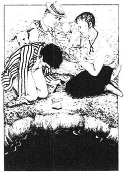
早饭后我坐在河边，陷入了沉思。乔治说：“喂，要是你休息得差不多了就帮忙洗洗碗碟吧：”我只好用树枝和乱草洗锅子，还用了乔治的湿衬衫。
然后我们又沿着河上路了，经过了古老的温莎镇那一片风景优美的地方。过了那儿风景就单调得很，一无可取，一直到布文奈。我和乔治一起拉着纤。当我们经过达切特时，乔治问我还记不记得第一次在河上旅游的情景。那一次，我们晚上十点钟才到达切特，大家只想吃点儿东西然后赶快去睡觉。
我说：“记得，当然忘不了。”我的确记得很清楚。说实在的，要让我忘了还真得费点儿时间呢。
那是八月份的一个星期六，同游的还是我们三个。我们那会儿又饿又累，到达切特的时候，我们从船里拿出一篮子食物，两个包，外套和其他一些东西。接着大家就想找地方安顿下来。我们经过一家很漂亮的小旅店，只是门口旁边没有玫瑰花。我偏偏想找一家门口有玫瑰的，也不明白怎么会如此心血来潮。我说：“慢着，我们别进去！咱们再找找其他旅店，看看有没有门口长满玫瑰的。”我们一直走，又来到另外一家旅店。那家旅店也不错，而且门口的确有玫瑰花。可哈里斯说，门口站着的那个人让人讨厌，看上去不像个好人，穿的靴子也那么难看，于是，我们只好再往前走，走了一阵子也没有看到其他旅馆，我们在路上碰到一个行人，便决定问问他。
“劳驾，您知道附近有哪些好点的旅馆吗？”我们问道。
“哟，”他说，“你们走过了，往回走会看到黑马旅馆。”
我们说：“喔，那里我们已经去过了，可是不大喜欢那一家，它门口没有玫瑰花。”
“哦，是这样，”他说，“那一家旅馆过来还有一个客来旅馆，你们去那儿了吗？”
哈里斯说我们不想去那家，不喜欢站在那儿的那个人，哈里斯不喜欢他头发的颜色，也不喜欢他穿的靴子。
“那我真不知道你们该怎么办了，”那个指路人回答说，“因为这里只有那两家旅馆。”
“再没有别的了？”哈里斯叫道。
“再没有了。”那个人回答说。
“那我们现在怎么办？”哈里斯又道。
接着，乔治说：“你们俩不妨找人给你们新盖个旅馆住住，我可要回黑马去了。”
后来我们只好都回黑马。
“晚上好，”一个男人在前台招呼道。
“啊，晚上好，”乔治回答说，“我们要三个床位，谢谢。”
“对不起，先生，”那人回答说，“可是我们没有三个床位。”
“哦，是吗？没关系——两个也行。我们可以有两个人睡在一张床上，是吧？”乔治接着说，看了看哈里斯和我。
哈里斯说：“对，可以。”他以为乔治和我可以舒舒服服挤在一张床上。
“非常抱歉，先生，”那个男人说，“我们的床位全没了。我们已经有三个人挤在一张床上睡了。”
就这样，我们拿起行李又去客来旅馆。那地方不大，却很美。我说这家比另一家要好。哈里斯也说没事，我们也不必去管那个长着红头发，穿着难看靴子的家伙了。
可旅馆里的人根本没等我们开口。前台的一位女士说她已经打发走十四个人了，什么样的房间都没有了。我们问她附近还有哪些地方可以留宿一夜。她说沿着路走下去有一幢房子。
我们二话没说，抄起篮子，抓起包，拎着衣服，一溜烟儿沿着路跑了下去。
到了那里，那儿的人直笑话我们，房子里只有三张床，可已经住了七个人了。
有人说：“怎么不去试试黑马旁边的那家小杂货店呢？”
于是我们又原路折回去。可小杂货店里也没有床铺了。有个老太太在杂货店里，她说有个朋友有几间屋子，还补充道愿意带我们去。
老太太走路很慢，我们花了二十分钟才到那里。一路上老太太一直唠叨着说腰上这儿也疼，那儿也疼。我们到的时候，她朋友家已经住了几个人了。从那儿我们又去27号，27号也住满了，把我们送到32号，32号也满了。
我们只好回到马路上，忽然哈里斯一屁股坐在篮子上，说他一动也不想动了。还说这地方倒挺安静，他宁可死在这儿算了。
正在这个时候，一个小男孩路过。我们问他：“你知不知道哪里有些老家伙们，我们可以吓唬他们一下，让他们把床让给我们？”
“哦，我不知道，”小男孩回答说，不过他又说他妈妈可以给我们一个房间。那天晚上我们就睡在了那里——在两张特别短的小床上。
从那以后，对于旅馆问题，我们再也不敢挑三拣四了。
目前这一段旅程，我们还没有碰到什么今人激动的事儿。我们把船慢慢悠悠划到猴子岛附近，停下来吃午餐。
我们准备吃冷肉。接着乔治拿出一听水果罐头。我们三个都很喜欢水果罐头。看着罐头盒上美丽的图画，想着里面的水果，想像着它的滋味，大家乐滋滋的，相视而笑。哈里斯拿出了一把调羹。接着大家找起了启罐器。我们把大篮子里的东西都拿出来，又把包里的东西都拿出来，可是找不到。我们把船底下的板子全拉开了，把所有东西都搬到河边草地上，把每件东西摇了又摇，可就是找不到启罐器！
哈里斯想用小刀开罐头，结果把自己狠狠划了一刀；乔治用剪刀试了试，结果剪刀飞了，差点扎到他的眼睛；我想用铁条的尖头在罐头上钻个小孔，可是没有对准，结果我摔进水里，罐头弹起来，砸碎了一只茶杯。
我们大家气得发疯。我们把罐头拿到岸上放在草地上。哈里斯找来一块又大又尖的石头，我拿了一根又长又粗的木头。乔治拿着罐头，哈里斯把石头尖对准了罐头的顶盖，我高高举起木头，使足了力量，狠命砸下去。
那天乔治全靠他的帽子才大难不死，他至今还保存着那顶帽子。每当冬夜来临，大家聊着自己知道的各种各样的历险，乔治就会把这顶帽子拿出来向朋友们展示一番，并把他的故事复述一遍，还不免要添油加醋。
哈里斯还好，伤得不太重。
后来我又接过那个罐头，又敲又打，直弄得我精疲力尽，垂头丧气。哈里斯又接着去锤打。
我们把罐头锤得又细又长，又敲得又正又方。我们拿着木头把罐头敲成了各种各样的形状——偏偏就敲不开一个小孔。然后乔治又拿过去敲打，敲得罐头成了个稀奇古怪，狰狞可怕的形状。乔治自己都害怕起来，干脆把木头扔了。我们三个人围着罐头坐在草地上，愣愣地看着它。
罐头顶上有一条粗粗的横线，好像咧着的嘴，冲着我们狞笑。我们越发怒气冲冲。哈里斯狠狠冲过去，一把抓起来，使劲扔出去，扔到河中心。我们看着它沉下去，用很难听的话骂它，然后上了船，离开那个鬼地方，直到梅登黑德才停脚。
我们急急忙忙驶过梅登黑德，等过了它慢慢才把速度减下来。快到库克姆时我们停下船，喝了下午茶。等我们通过水闸时已经是暮色苍茫了。
那天有点儿风，好像老天爷打错了主意，风从我们背后吹来，这可真是十分难得。不过，那天下午的风的确大大助了我们一臂之力，船飞也似地奔驰起来。
河上除了三个老头儿，再没有其他人影。他们坐在船上钓鱼。我们靠上去的时候，才看清楚他们都上了年纪，而且还特别一本正经的样子，眼睛一眨不眨地盯着钓鱼线。太阳快落山了，向水面射出万道灿烂的金光，美不胜收，我们也仿佛驶进了一片神奇的土地。
可是，实际上我们并没有驶进那神奇的地方，而是径直地朝着三个老头的船冲了过去。起初我们还不知道出了什么事情但是从夜幕中传来呼喊声，我们揣测附近有人，而且人家还十分愤怒和不满。原来，我们把三个老头儿从椅子上撞落到船底挤成一堆。他们一边吃力地爬起来，把撒落的鱼儿从自己身上拿开，一边冲着我们叫骂——不仅仅是些寻常的话，他们的叫骂还涉及我们本人，以及我们的三亲六眷。
哈里斯喊了一嗓子：“高兴点儿吧！这么好的事摊到你们头上。”他又说，像他们这么一把年纪的人还破口大骂，实在让他痛心。
可是三个老头儿并不买哈里斯的账？
到了马洛，我们在桥边上了岸，去旅馆过夜。
chapter-a109_ 12 Montmorency and the cat
Chapter 12
Montmorency and the cat
On Monday morning, we got up quite early and we went to swim before breakfast. On the way back, Montmorency behaved very stupidly.
The only thing that Montmorency and I disagree about is cats. I like cats. Montmorency does not.
When I meet a cat, I say hello to it. Then I bend down and I stroke it gently, behind the ears and along the side of its head. The cat likes this. It puts its tail up and it pushes itself against my legs. And there is love and peace. When Montmorency meets a cat, everybody knows about it, and a lot of bad words are used.
I do not really blame Montmorency (usually I just hit him, or throw stones at him), because dogs are like that. They hate cats. But that morning, Montmorency wished that he had not argued with a cat.
As we were coming back from the river, a cat ran out from one of the houses, and it began to walk across the road. Montmorency saw the cat, gave a shout of real happiness, and ran after it.
It was a big, black cat. I have never seen a bigger cat. It had lost half its tail and one of its ears, but it looked calm and happy.
Montmorency ran at that cat as fast as he could, but the cat did not hurry. It did not seem to understand that its life was in danger. It walked on quietly until the enemy was near it. Then it turned and sat down in the middle of the road. It looked at Montmorency in a quiet way, and it seemed to say,
'Yes? You want me?'
Montmorency is quite a brave dog, but there was something in the way the cat looked at him. It frightened him. He stopped suddenly, and he looked at the cat. They did not speak, of course, but it was easy to imagine their conversation.
THE CAT: Can I do anything for you?
MONTMORENCY: No... no, thanks.
THE CAT: Do please tell me if there is something you want, won't you?
MONTMORENCY (who moves backwards down the road): Oh, no. Not at all... certainly... I... I'm afraid I've made a mistake. I thought I knew you... I'm sorry.
THE CAT: Not at all. Are you quite sure you don't want anything now?
MONTMORENCY (who continues to move back): Not at all... thanks... not at all... very kind of you... Good morning.
THE CAT: Good morning.
Then the cat stood up and continued along the road. Montmorency, with his tail between his legs, walked behind us. He hoped that nobody would notice him.
Now, if you say 'Cats!' to Montmorency, he looks up at you, and his eyes beg you, 'No, please!'
After this we did our shopping, went back to the boat, and moved off along the river again. However, at Hambledon lock, we found that we had no water. So we went to ask the lock-keeper for some. George spoke for us. He said, 'Oh, please, could you give us a little water?'
'Of course,' the old man replied. 'Just take what you want and leave the rest.'
'Thank you very much,' George said, and he looked round. 'But where is it?'
'It's where it always is, my boy,' the lock-keeper answered. 'It's behind you.'
George looked round again. 'I can't see it,' he said.
'Why? Where are your eyes?' the man said, and he turned George towards the river.
'Oh!' George cried. 'But we can't drink the river, you know.'
'No, but you can drink some of it,' the old man replied. 'That's what I've drunk for fifteen years.'
We got some water from another house.
After we had got our water, we went on towards Wargrave, but before we got there, we stopped for lunch.
We were sitting in a field near the river, and we were just going to start eating. Harris was preparing the food, and George and I were waiting with our plates.
'Have you got a spoon?' Harris asked. 'I need a spoon.'
The basket was behind us, and George and I both turned to get a spoon. It took about five seconds. When we looked back again, Harris and the food had gone. It was an open field, and there were no trees. There was nowhere to hide. He had not fallen in the river, because we were between him and the water.
George and I looked round. Then we looked at each other. Harris had gone — disappeared! Sadly, we looked again at the place where Harris and the food had been. And then, to our horror, we saw Harris's head — and only his head — in the grass. The face was very red and very angry.
George was the first to speak.
'Say something!' he cried. 'Are you alive or dead? Where is the rest of you?'
'Oh, don't be so stupid!' Harris's head said. 'It's your fault. You made me sit there. You did it to annoy me! Here, take the food!'
And from the middle of the grass the food appeared, and then Harris came out, dirty and wet.
Harris had not known that he had been sitting on the edge of a hole. The grass had hidden it. Then, suddenly, he had fallen backwards into it. He said he had not known what was happening to him. He thought, at first, that it was the end of the world.
Harris still believes that George and I planned it.
stroke v. to draw one's hand gently over the surface of, as in caressing. 轻抚。
tail n. the rear end of an animal's body. 尾巴。
enemy n. a person who hates another, and wishes or tries to injure him. 敌人，敌手。
conversation n. a talking together. 交谈。
spoon n. a thing for eating food. 勺子。
horror n. the strong feeling caused by something frightful or shocking. 恐惧。
fault n. error, misdeed, mistake. 错误。
“元帅”和猫
12 “元帅”和猫
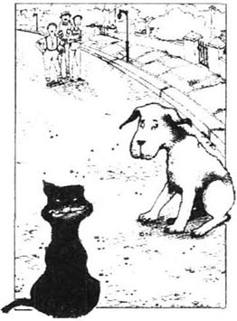
星期一早晨，我们起得很早，早饭前在河里洗了一个澡。就在回来的路上，“元帅”干了一件天大的蠢事。
我和“元帅”只在一个问题上存在分歧，那就是对猫的看法：我喜欢猫，而“元帅”却不。
我每次遇到猫，总会亲切地招呼它，俯下身轻轻抚摸它，摸摸它的耳后和脑袋旁边。猫呢，喜欢的就是这一套，它会竖起尾巴，把身体在我的腿上蹭蹭，充满了温柔和恬静的感觉。可是如果“元帅”遇见猫，那准会搅得四邻不安，直招别人的骂。
我倒并不责怪“元帅”（通常不过敲它一下，或者用石子扔它），因为狗的本性就是这样，它们就是恨猫。但那天早上，它却宁可自己没有去招惹那只猫。
我们从河边回来时，一只猫从某间屋子里蹿出来，穿过马路。“元帅”一看见猫，无比幸福地发出一声欢呼，就追了下去。
那是一只又大又黑的猫。我从来没有见过这么大的猫，虽然掉了半只尾巴和一只耳朵，看上去还是一副泰然自若，满不在乎的样子。
“元帅”使足了劲儿去追那只猫，可猫却不慌不忙，若无其事的，似乎没有意识到生命已受到威胁。它仍然不动声色地走着，直到敌人走近了才转过身，坐在马路中间，冷静地看着“元帅”，好像在说：
“怎么，你找我吗？”
“元帅”向来是只勇猛顽强的狗，可那只黑猫凛然看他的眼神却使这条英勇非凡的狗吓得矮了半截。它突然站住，瞪着眼看着黑猫。当然双方一言不发，但很容易想像它们俩的谈话内容。
黑猫：“我能为您效劳吗？”
“元帅”：“没……没什么事，谢谢。”
黑猫：“您有什么要求，就请坦率地说，好吗？”
“元帅”（身子沿着马路退后几步）：“不，一点儿也没有。我……恐怕……是个误会。我还以为认识您的……对不起。”
黑猫：“没关系。您当真没什么要求吗？”
“元帅”（还往后退着）：“没……没有。什么也没有……谢谢……没有……您真太好了，早上好。”
黑猫：“早上好。”
于是黑猫站起来，继续沿着马路往前走。“元帅”尾巴夹在两腿之间，躲在我们身后，盼着别人都没有注意到它。
直到今天，只要你对“元帅”一提“猫！”它就会仰头望着你，可怜巴巴的样子好像在说：“请别再提了。”
这番历险之后，我们去买东西，买完东西又上了船，起航。不久到了汉布尔登水闸才发现水喝光了。我们到水闸看守人那里要水，乔治是我们的发言人。他说：“请您帮个忙，给我们一点儿水，好吗？”
“当然可以，”老汉答道，“要多少拿多少，剩下的还放在那儿就行了。”
“太谢谢您啦，”乔治向两边看了看，“可您的水在哪儿？”
“总在那个老地方嘛，我的孩子，”看闸人说，“就在你背后。”
乔治又看看四周：“我还是看不见啊！”他说。
“怎么，你的眼睛长哪儿去了？”老汉说着把乔治的身子转向河面。
“哦！”乔治喊了一声，“可您知道，我们总不能把河水都喝了呀！”
“是啊，可是你可以喝一点儿啊！”老人回答，“我喝这水喝了十五年了。”
最后，还是从另外一家讨来点儿水。
水有了，我们又驶向沃格雷夫。还没有到那里，我们就停船吃午餐。
坐在水边的草地上，大家准备吃午餐。哈里斯正在做饭，乔治和我拿着盘子等着。
“你们谁有一把勺子？”哈里斯问，“我要个勺子。”
篮子就放在我们身后，乔治和我转身去拿勺子。统共不到五秒钟，我们回身一看，哈里斯和吃的东西都不见了。那是一片空荡荡的草地，周围没有一棵树，没有地方可以躲藏。他也不可能掉进河里，因为我们坐在他和河水之间。
乔治和我四周看了看，又相对瞠目而视。哈里斯不见了！——失踪了！我们伤心地转过头看看刚才哈里斯和午饭还在的地方。不看还罢，这一看吓得我们魂飞天外！——我们看见哈里斯的头——只有一个脑袋在草地上，脸胀得通红，十分生气的样子。
乔治首先恢复神态，说了话：
“快说！”他喊道，“你到底活着，还是死了，你的身体哪儿去了？”
“呸！别装傻了，”哈里斯的脑袋开口说，“还不是你们搞的鬼，逼我坐在这里，不让我有好日子过！快，拿着饭！”
草地中间出来了午饭，随后哈里斯也爬了出来，浑身上下又脏又湿。
哈里斯没有意识到刚才坐在一个洞口上。茂草掩盖了洞口，他突然就向后掉了下去。他说起初也想不明白到底怎么回事，只道是世界末日来临了！
哈里斯至今仍然以为是乔治和我搞的阴谋。
chapter-a109_ 13 Harris and the swans
Chapter 13
Harris and the swans
After lunch, we moved on to Wargrave and Shiplake, and then to Sonning. We got out of the boat there, and we walked about for an hour or more. It was too late then to go on past Reading, so we decided to go back to one of the Shiplake islands. We would spend the night there.
When we had tied the boat up by one of the islands, it was still early. George said it would be a good idea to have a really excellent supper. He said we could use all kinds of things, and all the bits of food we had left. We could make it really interesting, and we could put everything into one big pan together. George said he would show us how to do it.
We liked this idea, so George collected wood to make a fire. Harris and I started to prepare the potatoes. This became a very big job. We began quite happily. However, by the time we had finished our first potato, we were feeling very miserable. There was almost no potato left. George came and looked at it.
'Oh, that's no good. You've done it wrong! Do it like this!' he said.
We worked very hard for twenty-five minutes. At the end of that time we had done four potatoes. We refused to continue.
George said it was stupid to have only four potatoes, so we washed about six more. Then we put them in the pan without doing anything else to them. We also put in some carrots and other vegetables. But George looked at it, and he said there was not enough. So then we got out both the food baskets. We took out all the bits of things that were left, and we put them in, too. In fact, we put in everything we could find. I remember that Montmorency watched all this, and he looked very thoughtful. Then he walked away. He came back a few minutes later with a dead rat in his mouth. He wanted to give it to us for the meal. We did not know if he really wanted to put it in the pan, or if he wanted to tell us what he thought about the meal. Harris said he thought it would be all right to put the rat in. However, George did not want to try anything new.
It was a very good meal. It was different from other meals. The potatoes were a bit hard, but we had good teeth, so it did not really matter.
After supper Harris was rather disagreeable — I think it was the meal which caused this. He is not used to such rich food. George and I decided to go for a walk in Henley, but we left Harris in the boat. He said he was going to have a glass of whisky, smoke his pipe, and then get the boat ready for the night. We were on an island, so when we came back we would shout from the river bank. Then Harris would come in the boat and get us. When we left, we said to him, 'Don't go to sleep!'
Henley was very busy, and we met quite a lot of people we knew in town. The time passed very quickly. When we started off on our long walk back, it was eleven o'clock.
It was a dark and miserable night. It was quite cold, and it was raining a bit. We walked through the dark, silent fields, and we talked quietly to each other. We wondered if we were going the right way. We thought of our nice, warm, comfortable boat. We thought of Harris, and Montmorency, and the whisky — and we wished that we were there.
We imagined that we were inside our warm little boat, tired and a little hungry, with the dark, miserable river outside. We could see ourselves — we were sitting down to supper there; we were passing cold meat and thick pieces of bread to each other. We could hear the happy sounds of our knives and our laughing voices. We hurried to make it real.
After some time, we found the river, and that made us happy. We knew that we were going the right way. We passed Shiplake at a quarter to twelve, and then George said, quite slowly. 'You don't remember which island it was, do you?'
'No, I don't,' I replied, and I began to think carefully. 'How many are there?'
'Only four,' George answered. 'It'll be all right, if Harris is awake.'
'And if he isn't awake?' I asked.
But we decided not to think about that.
When we arrived opposite the first island, we shouted, but there was no answer. So we went to the second island, and we tried there. The result was the same.
'Oh, I remember now,' George said. 'It was the third one.'
And, full of hope, we ran to the third one, and we called out. There was no answer.
It was now becoming serious. It was after midnight. The hotels were all full, and we could not go round all the houses and knock on doors at midnight! George said that perhaps we could go back to Henley, find a policeman and hit him. He would arrest us and take us to a police station, and then we would have somewhere to sleep. But then we thought, 'Perhaps he won't arrest us. Perhaps he'll just hit us, too!' We could not fight policemen all night.
We tried the fourth island, but there was still no reply. It was raining hard now, and it was not going to stop. We were very cold, and wet, and miserable. We began to wonder if there were only four islands, or if we were on the wrong bit of the river. Everything looked strange and different in the darkness.
Just when we had lost all hope, I suddenly saw a strange light. It was over by the trees, on the opposite side of the river. I shouted as loudly as I could.
We waited in silence for a moment, and then (Oh, how happy we were!) we heard Montmorency bark.
We continued to shout for about five minutes, and then we saw the lights of the boat. It was coming towards us slowly. We heard Harris's sleepy voice. He was asking where we were.
Harris seemed very strange. It was more than tiredness. He brought the boat to our side of the river. He stopped, at a place where we could not get into the boat, and then immediately he fell asleep.
We had to scream and yell to wake him up again. At last we did wake him up, and we got into the boat.
Harris looked very sad. In fact, he looked like a man who had had a lot of trouble. We asked him if anything had happened, and he said, 'Swans!'
We had left the boat near a swan's nest, and, soon after George and I had left, Mrs Swan came back. She started to shout at Harris. However, Harris managed to chase her away, and she went to fetch her husband. Harris said he had had quite a hard battle with these two swans. But he had fought bravely and, in the end, he defeated them.
Half an hour later they returned — with eighteen more swans. There was another terrible battle. Harris said the swans had tried to pull him and Montmorency from the boat and drown them. But, once again, Harris fought bravely, for four hours, and he had killed them all. Then they had all swum away to die.
'How many swans did you say there were?' George asked.
'Thirty-two,' Harris replied, sleepily.
'You said eighteen before,' George said.
'No, I didn't,' Harris answered. 'I said twelve. Do you think I can't count?'
We never discovered what had really happened. We asked Harris about it the next morning, but he said, 'What swans?' And he seemed to think that George and I had been dreaming.
Oh, how wonderful it was to be in the boat again! We ate a very good supper, and then we thought we would have some whisky. But we could not find it. We asked Harris what he had done with it, but he did not seem to understand. The expression on Montmorency's face told us that he knew something, but he said nothing.
I slept well that night, although Harris did wake me up ten times or more. He was looking for his clothes. He seemed to be worrying about his clothes all night.
Twice he made George and me get up, because he wanted to see if we were lying on his trousers. George got quite angry the second time.
'Whatever do you want your trousers for? It's the middle of the night!' he cried. 'Why don't you lie down and go to sleep?'
The next time I woke up Harris said he could not find his shoes. And I can remember that once he pushed me over onto my side. 'Wherever can that umbrella be?' he was saying.
swan n. a big white bird with a long neck. 天鹅。
island n. a land mass not as large as a continent, surrounded by water. 岛屿。
carrot n. a plant with a fleshy, oranged-red root. 胡萝卜。
disagreeable adj. bad-tempered, unfriendly. 不友好的。
make it real to bring it into reality. 变为现实。
result n. anything that comes about as a consequence or outcome of some action. 结果，结局。
tiredness n. the state of losing physical strength. 疲惫。
yell v. to shout very loudly. 大声喊叫。
nest n. a place that a bird make to have its eggs. 巢穴。
chase away to run after, to drive away. 轰走。
expression n. a look, sign, etc. that shows feeling or meaning. 表情。
哈里斯与天鹅
13 哈里斯与天鹅
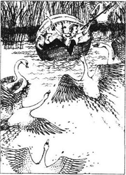
午饭之后，我们继续驶向沃格雷夫和希普雷克，然后再去松宁。在那里下了船，游览了一个多小时。来不及赶到雷丁了，所以我们决定回到希普雷克，在那里找一个小岛过夜。
我们在一个小岛上拴好了船，天色尚早。乔治说要是能真正做上一顿可口的晚餐那该多好啊！还说可以把所有的东西，剩的饭都做到一起，那才有味道呢！我们可以把这些东西都放在一只大锅里。乔治要给我们露一手，表演一下怎么做。
这个主意太妙了。乔治便去找木头生火，哈里斯和我准备弄土豆。真没想到工程如此浩大。刚开始的时候我们还挺高兴，可是刚削完第一个土豆，我们就已经痛苦不堪了。一个土豆几乎削得没剩多少了。乔治走过来一看，说：
“哦，这样削可不行。你们把东西全糟塌了。看，像我这样削。”
我们辛辛苦苦地干了二十五分钟，才削好了四个，我们坚决不干了。
乔治说只有四个土豆也太不像话了。因此我们又洗了六个，没削没刮，就那么放在锅里，又放了一些胡萝卜和其他蔬菜。可是乔治看看，说还是不够。我们只好把两个装食物的篮子都拿出来了，把剩下的所有的东西都放进锅里。说实在的，我们把能找到的都放进去了。我还记得在整个烹饪过程中，“元帅”一直心事重重地看着，又走开了。过了一会儿，他叼着一只死耗子回来了，想给我们的晚餐作点贡献。到底它是真的想把死耗子放进锅里呢，还是想告诉我们这是它对晚餐的看法呢，我们不得而知。哈里斯说放进去很好，可是乔治不想搞什么新的试验。
这顿饭确实很好，与以往吃的都不同。土豆有些硬，但因为我们的牙好，所以也没什么大问题。
哈里斯吃罢晚饭变得有些不太友好——我想这一定是那顿饭在作怪，他还不适应那么丰盛的食物。乔治和我打算到亨利城里面转一转，把哈里斯留在船上。他说他要喝一杯威士忌，抽斗烟，再把船弄好，准备过夜。我们停在一个岛上，所以回来的时候只要在岸上喊上一声，哈里斯就把船摇过来接我们。临行的时候，我们叮嘱他：“可别睡着了！”
亨利城里面十分热闹，我们在那里碰见不少伦敦城里的熟人。时间过得真快，我们动身回来时，已经十一点了，还有长长的一段路要走。
那是个阴沉可怕的夜晚，冷气逼人，又下着小雨。我们穿过黑暗寂静的旷野，低声谈着话，心里直犯嘀咕，也不知道走的路对不对。一想到我们那个温暖，舒适的小船，想到哈里斯和“元帅”，还有威士忌——真不如就呆在船上呢。
我们想像自己拖着饥饿、疲惫的身子回到船上，周围是阴森可怕的河水。我们仿佛看见自己坐下来吃着晚餐，互相递着冷肉和一片片厚厚的面包；我们仿佛听见刀叉叮当作响，听到自己阵阵的笑语。我们归心似箭，要尽快实现这个梦想。
又过了一段时间，我们终于到了河边，心中才高兴起来，知道自己走的路没有错。我们经过希普雷克的时候是十一点三刻，乔治慢吞吞地问道：“你还记得咱们住的那个小岛，是吗？”
“不，记不得了，”我回答说，然后我也开始使劲儿想，“一共有几个岛啊？”
“只有四个，”乔治回答，“只要哈里斯醒着，准能找到。”
“要是他没醒着怎么办？”我问。
我们打定主意不去那么想。
我们走到第一个岛对面大喊大叫，可是毫无回音。我们又跑到第二个岛对面又喊，还是没有回音。
“哦，我想起来了，”乔治说，“我们住的是第三个岛。”
我们满怀希望地跑到第三个岛又喊了一通，还是没有回音。
这样，问题就严重了。时间已过半夜，旅馆也早已客满，我们总不能走遍全城，半夜里一家一家挨着敲门吧！乔治说也许我们应该回亨利城，找个警察，把他打一顿，他就会把我们抓起来带到派出所。那样我们就有地方睡觉了。可是转念一想：“说不定警察不抓我们，只是把我们揍一顿呢！”我们不能整个晚上都和警察打架。
我们又摸索到第四个岛，同样毫无结果。雨下得越来越大，没有要停的样子。我们又冷又湿，狼狈不堪。我们开始怀疑起来：到底是不是只有四个小岛呢，还是我们走到了另一个河岸？漆黑一片，一切都变幻莫测。
正在我们绝望的时候，我忽然看见一道奇异的光，从河对岸的树林里透了出来，于是我扯着嗓子喊起来。
我们静静等了一会儿。啊！我们听见“元帅”吠叫（哦！我们太高兴了！）
我们又声嘶力竭地喊了五分钟，才看见小船上的灯光慢慢地向我们移过来，又听见哈里斯迷迷糊糊的声音，问我们在哪里。
哈里斯显得有点奇怪，不像是一般的困倦。他把船靠到岸边，停下来，可那个地方我们根本无法上船，而他自己却又马上睡着了。
我们只能喊着，尖叫着才能把他弄醒。他好不容易醒过来，我们这才得以上船。
哈里斯看上去十分难过，就好像经历了一场大劫难。我们问他到底发生了什么事儿，他说了两个字：“天鹅！”
原来，我们把船停在了天鹅巢的旁边。就在我和乔治起身刚走，天鹅太太回来了。她冲着哈里斯直嚷嚷，而哈里斯呢，使出浑身解数把天鹅太太赶走。于是她把她丈夫拉来了。哈里斯说他和两只天鹅战斗得异常激烈，哈里斯愈战愈勇，最后大获全胜。
过了半个小时，它们卷土重来——又带来了十八只天鹅！又是一场昏天黑地的战斗。那些天鹅要把哈里斯和“元帅”拖到水里去，淹死他们。哈里斯再次以大无畏的精神又战斗了四个小时，把它们全部歼灭。它们只能游到别的地方，等死去吧！
“你说一共有多少只天鹅？”乔治问道。
“三十二只。”哈里斯半睡半醒地回答说。
“可你刚才不是说十八只吗？”乔治说。
“我可没说，”哈里斯咕哝道，“我说的是十二只。你当我不会数数啊？”
到底那场天鹅战争是怎么一回事，我们始终没搞清楚，第二天早上我们问起哈里斯这件事，他却说：“什么天鹅？”他以为乔治和我一直还做着梦呢！
哦，重新回到船上可真好！我们美美地吃了一顿晚餐。本来还想好好地喝上点儿威士忌，却怎么也找不着。我们审问哈里斯，把威士忌搞到哪里去了，他一派茫然无知的样子，根本不懂我们在谈什么。可“元帅”脸上的表情却好像告诉我们，它知道些内幕，但它什么也不说。
我那天晚上睡得很好，尽管哈里斯把我吵醒了十好几回。他一直在找衣服，似乎一晚上尽担心他的衣服了。
他把乔治和我推醒了两次，就是为了看看我们有没有压在他的裤子上，第二次的时候，乔治气坏了。
“你半夜三更起来找裤子，到底要干嘛？”乔治喊道，“干嘛不躺下来好好去睡觉。”
我第二次醒来时，哈里斯说找不着鞋了。后来我还记得他把我推了一个个儿，还在说：“我的伞能去哪儿呢？”
chapter-a109_ 14 Work, washing, and fishing
Chapter 14
Work, washing, and fishing
We woke up late the next morning, and it was about ten o'clock when we moved off. We had already decided that we wanted to make this a good day's journey.
We agreed that we would row, and not tow, the boat. Harris said that George and I should row, and he would steer. I did not like this idea at all. I said that he and George should. row, so that I could rest a little. I thought that I was doing too much of the work on this trip. I was beginning to feel strongly about it.
I always think that I am doing too much work. It is not because I do not like work. I do like it. I find it very interesting. I can sit and look at it for hours. You cannot give me too much work. I like to collect it. My study is full of it.
And I am very careful with my work, too. Why, some of the work in my study has been there for years, and it has not got dirty or anything. That is because I take care of it.
However, although I love work, I do not want to take other people's work from them. But I get it without asking for it, and this worries me.
George says that I should not worry about it. In fact, he thinks that perhaps I should have more work. However, I expect he only says that to make me feel better.
In a boat, I have noticed that each person thinks that he is doing all the work. Harris's idea was that both George and I had let him do all the work. George said that Harris never did anything except eat and sleep. He, George, had done all the work. He said that he had never met such lazy people as Harris and me.
That amused Harris.
'George! Work!' he laughed. 'If George worked for half an hour, it would kill him. Have you ever seen George work?' he added, and he turned to me.
I agreed with Harris that I had never seen George work.
'Well, how can you know?' George answered Harris. 'You're always asleep. Have you ever seen Harris awake, except at meal times?' George asked me.
I had to tell the truth and agree with George. Harris had done very little work in the boat.
'Oh, come on! I've done more than old J., anyway,' Harris replied.
'Well, it would be difficult to do less,' George added.
'Oh, him, he thinks he's a passenger and doesn't need to work!' Harris said.
And that was how grateful they were to me, after I had brought them and their old boat all the way up from Kingston; after I had organized everything for them; and after I had taken care of them!
Finally, we decided that Harris and George would row until we got past Reading, and then I would tow the boat from there.
We reached Reading at about eleven o'clock. We did not stay long, though, because the river is dirty there. However, after that it becomes very beautiful. Goring, on the left, and Streatley, on the right, are both very pretty places. Earlier, we had decided to go on to Wallingford that day, but the river was lovely at Streatley. We left our boat at the bridge, and we went into the village. We had lunch at a little pub, and Montmorency enjoyed that.
We stayed at Streatley for two days, and we took our clothes to be washed. We had tried to wash them ourselves, in the river, and George had told us what to do. This was not a success! Before we washed them, they were very, very dirty, but we could just wear them. After we had washed them, they were worse than before. However, the river between Reading and Henley was cleaner because we had taken all the dirt from it, and we had washed it into our clothes. The woman who washed them at Streatley made us pay three times the usual price.
We paid her, and did not say a word about the cost.
The river near Streatley and Goring is excellent for fishing. You can sit and fish there all day.
Some people do sit and fish all day. They never catch any fish, of course. You may catch a dead cat or two, but you will not catch any fish. When you go for a walk by the river, the fish come and stand half out of the water, with their mouths open for bread. And if you go swimming, they all come and stare at you and get in your way. But you cannot catch them.
On the second evening, George and I and Montmorency (I do not know where Harris was) went for a walk to Wallingford. On the way back to the boat, we stopped at a little pub, by the river.
We went in and sat down. There was an old man there. He was smoking a pipe, and we began to talk to him.
He told us that it had been a fine day today, and we told him that it had been a fine day yesterday. Then we all told each other that we thought it would be a fine day tomorrow.
We told him that we were on holiday on the river, and that we were going to leave the next day. Then we stopped talking for a few minutes, and we began to look round the room. We noticed a glass case on the wall. In it there was a very big fish.
The old man saw that we were looking at this fish.
'Ah,' he said, 'that's a big fish, isn't it?'
'Yes, it is,' I replied.
'Yes,' the old man continued, 'it was sixteen years ago. I caught him just by the bridge.'
'Did you, really?' George asked.
'Yes,' the man answered. 'They told me he was in the river. I said I'd catch him, and I did. You don't see many fish as big as that one now. Well, good night, then.' And he went out.
After that, we could not take our eyes off the fish. It really was a fine fish. We were still looking at it when another man came in. He had a glass of beer in his hand, and he also looked at the fish.
'That's a fine, big fish, isn't it?' George said to him.
'Ah, yes,' the man replied. He drank some of his beer, and then he added, 'Perhaps you weren't here when it was caught?'
'No,' we said, and we explained that we did not live there. We said that we were only there on holiday.
'Ah, well,' the man went on, 'it was nearly five years ago that I caught that fish.'
'Oh, did you catch it then?' I asked.
'Yes,' he replied. 'I caught him by the lock... Well, good night to you.'
Five minutes later a third man came in and described how he had caught the fish, early one morning. He left, and another man came in and sat down by the window.
Nobody spoke for some time. Then George turned to the man and said, 'Excuse me, I hope you don't mind, but my friend and I, who are only on holiday here, would like to ask you a question. Could you tell us how you caught that fish?'
'Who told you that I caught that fish?' he asked.
We said that nobody had told us. We just felt that he was the man who had caught it.
'Well, that's very strange,' he answered, with a little laugh. 'You're right. I did catch it.' And he went on to tell us how he had done it, and that it had taken him half an hour to land it.
When he left, the landlord came in to talk to us. We told him the different stories we had heard about his fish. He was very amused and we all laughed about it. And then he told us the real story of the fish.
He said that he had caught it himself, years ago, when he was a boy. It was a lovely, sunny afternoon, and instead of going to school, he went fishing. That was when he caught the fish. Everyone thought he was very clever. Even his teacher thought he had done well and did not punish him.
He had to go out of the room just then, and we turned to look at the fish again. George became very excited about it, and he climbed up onto a chair to see it better.
And then George fell, and he caught hold of the glass case to save himself. It came down, with George and the chair on top of it.
'Is the fish all right?' I cried.
'I hope so,' George said. He stood up carefully and looked round. But the fish was lying on the floor — in a thousand pieces!
It was not a real fish.
journey n. traveling from one place to another, trip. 旅程，旅途。
row v. to move, propel a boat on water by or as by using oars. 划船。
study n. a room designed for studying, writing, reading. 书房。
amuse v. to make laugh, smile. 逗乐，逗笑。
passenger n. a person, traveling in a train, bus, boat, etc. 乘客，旅客。
stare at v. fix one's eyes on... 盯着看，瞪着。
get in one's way to hinder, prevent. 阻挡，挡着你的路。
case n. a kind of box with glass in the front. 玻璃匣子，盒子。
explain v. to make clear, plain. 说明，解释。
describe v. to tell about, to picture in words. 描述。
landlord n. the owner of a pub. 酒馆老板。
punish v. to cause a person to be under suffering for a wrongdoing. 惩罚。
干活、洗衣和钓鱼
14 干活、洗衣和钓鱼
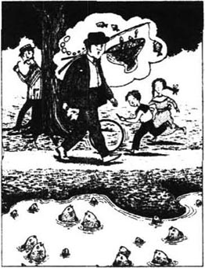
第二天早晨我们很晚才醒，直到十点钟才出发。我们已经打定主意，今天要好好地玩上一天。
我们一致同意，今天改划船，不拉纤了。哈里斯说乔治和我应该划船，他来掌舵。我根本不同意。我说应该让他和乔治划船，而让我休息休息。我觉得在这次旅程中，我干的活儿太多了，对此我愈发不能忍受了。
每次我都觉得自己干的活儿太多了。这倒不是我不喜欢干活儿。我热爱工作，也感到工作很有趣。我能坐着几个小时看要干的活儿。你给我多少工作，我都不嫌多，因为我喜欢收藏，书房里都堆满了。
这些工作，我可爱惜呢。很多放在书房里有年头了，可是一点儿灰尘都没有。那是因为我爱护它们。
尽管我喜欢工作，可我不想把别人的工作也揽过来。往往是我没要求，它却找上门儿来，真让我烦恼。
乔治劝我对这个问题不必太在意。实际上，他觉得我应该再多干点儿呢。我把他说的这些只当成安慰我的话。
我注意到，无论在哪条船上，每个人都觉得自己把所有的活儿都干了。哈里斯觉得乔治和我让他干了所有的活儿。乔治说哈里斯除了睡觉吃饭，什么也没干。只有他——乔治，才真正把什么都包了。他说，从来没有见过像我和哈里斯这么懒的人。
哈里斯听了此话又好气，又好笑。
“什么？！乔治干活儿？”他笑道，“他只要干上半个小时准得要了他的命！你见过乔治干过活儿没有？”他转过脸来问我。
我同意哈里斯的话，确实没见乔治干过活儿。
“哼！你们怎么会知道我干的活儿呢？”乔治反驳哈里斯一句。“你总在睡，睡，还是睡！你看见过哈里斯醒的时候吗？除了吃饭？”他转过脸来问我。
我只能说实话，支持乔治的说法，哈里斯在船上确实没干过什么。
“哦，得了，我总比老杰干得多吧，”哈里斯回答说。
“是的，想比他干得更少有点不大可能。”乔治附和道。
“他呀，把自己当成船上的乘客，不必工作！”哈里斯说。
这就是他们对我的报答！我把他们两个和这条破船从金斯敦一直拉到这里，为他们安排好一切，照顾他们一路，这就是他们对我的报答！
最后我们决定由哈里斯和乔治把船划到雷丁，从雷丁以后由我来拉纤。
将近十一点钟，我们到了雷丁。我们没在那里久留，因为河水很不干净。然而雷丁以上那一段河上风光就非常可爱了。左边有戈灵，右边是斯特雷特利，都是景致优美的地方，我们本来打算当天赶到沃灵福德，可是斯特雷特利这一带景色使我们流连忘返，我们便在桥边弃舟登岸，走进了这个小村庄，在一个小酒馆吃了午餐，“元帅”在这里也玩得很开心。
我们在斯特雷特利住了两天，把衣服洗了。这次是我们在河里自己洗的，乔治告诉我们怎么洗，我们就怎么洗。结果是令人不堪回首的失败？没洗之前，我们的衣服已经很脏了，但是还可以对付着穿。可是，洗了之后呢，反倒比以前更糟了。不过，从雷丁到亨利的河水一下子更清澈了，因为我们把河里所有污物都收集到一起，洗到我们的衣服里去了。斯特雷特利的洗衣妇管我们要了平常价格的三倍才肯给我们洗。
我们照单付款，一声也没报怨我们的花费。
斯特雷特利和戈灵附近的河上可是个钓鱼的绝佳去处，你可以坐在这儿，整整钓上一天。
确实有人整天坐着钓鱼，当然，就是钓不着。也许你能钓上一两只死猫，可你别想钓着鱼？你在河边散步时，鱼游过来，一半身子立在水外，张着嘴要面包。要是你去游泳，它们全都游过来，瞪着你看，挡着你的路。可是想抓住它们，没门儿。
第二天晚上，乔治，我，还有“元帅”去沃灵福德转了一圈（哈里斯不知道上哪儿去了）。回来的时候，经过河边一家小酒馆，我们歇了歇脚。
我们走进去，坐下来。还有一位老先生也在那里，抽着烟斗，我们便和他聊起来。
他对我们说，今天天气很好。我们对他说，昨天天气也不错。然后我们一起预测，明天天气大概也不会坏。
我们又告诉他我们在河上度假旅行，明天就又要启程了。接着，谈话沉默了一会儿，我们四处打量着屋子，最后眼光转到墙上挂着的一个玻璃匣子，里面装着一条大鱼。
那位老先生看到我们正盯着那条鱼。
“啊，”他说，“真是条大鱼，是吧？”
“是啊，是啊，”我答道。
“那是……”老人继续说，“十六年前了，我在桥边钓上来的。”
“哦，是吗？”乔治问道。
“是的，”老人答道，“他们说河里有一条这样的鱼。我就说，我要把它钓上来，真的就钓上来了。现在这么大个的鱼很少见了。好吧，再见吧。”说着就走了出去。
我们一直还目不转睛地看着那条鱼，真是条出色的鱼。我们正看着，又进来一个人。他手里拿着一杯啤酒，眼睛也盯着那条鱼。
“可真是条大鱼啊！”乔治对那人说。
“啊，是的，”那人回答说。接着喝了一口啤酒，又说道：“这条鱼给钓上来的时候，你们也许还不在这儿吧？”
“不在。”我们对他说，我们不住在这儿，只是来这里度假。
“啊，是这样，”那人说，“五年前吧，我钓到了这条鱼。”
“那么，这鱼是你钓到的？”我问。
“正是的。”他答，“在那边水闸下钓到的……好吧，那么晚安吧。”
五分钟之后，进来了第三个客人，跟我们描述了一番他是怎么样在某个大清早钓着这条鱼的。他走了，又来了一位，在窗口坐下来。
有一会儿，我们都没说话。然后乔治转过去向那个人说道：“请原谅，希望您别介意。我的朋友和我在此度假，恕我们冒昧问您一个问题。请您谈一谈您是怎样钓到那条鱼的，好吗？”
“谁告诉你们说那条鱼是我钓着的？”他问。
我们说，谁也没有告诉我们，不过我们觉得那条鱼是他钓着的？
“啊！真是奇事，”他回答道，笑了起来。“一点儿不错，是我钓着的。”接着他又描述了他怎么钓着的，怎么花了半个小时才把这条鱼拖上岸的。
他走了以后，酒店老板进了屋，来和我们聊天。我们就把刚才听到的各人的故事给他又讲了一遍。他觉得非常有趣，我们一起捧腹大笑。然后他告诉了我们这条鱼真正的来历。
他告诉我们这鱼是他自己钓上来的。那时他还是个毛孩子呢！记得那是个阳光明媚的下午，他没去上学，溜出去钓鱼，这条鱼就是那时钓上来的。大家都夸他聪明，就连老师也说他干得不错，因此没有惩罚他。
这时，老板有事要出去一下，我们又转过头来看着这条鱼发呆。乔治心情激动，抑制不住，连忙爬到椅上看个真切。
突然，乔治摔了下去，他伸手抓住玻璃匣子支撑他一下，谁知它也滑了下来，乔治连人带椅一齐压在上面。
“鱼没事吧？”我叫了一声。
“但愿没事。”乔治说着，小心翼翼地站起身，四下看了看。可是鱼躺在地上——给摔成了几千瓣儿了。
原来，这根本就不是一条真鱼。
chapter-a109_ 15 On to Oxford
Chapter 15
On to Oxford
We left Streatley early the next morning. We were going to Culham, and we wanted to spend the night there. Between Streatley and Wallingford the river is not very interesting. Then from Cleeve there is quite a long piece of the river which has no locks. Most people are pleased about this because it makes everything much easier, but I quite like locks, myself. I remember that George and I nearly had an accident in a lock once...
It was a lovely day, and there were a lot of boats in the lock. Someone was taking a photograph of us all, and the photographer was hoping to sell the picture to the people in the lock. I did not see the photographer at first, but suddenly George started to brush his trousers, and he fixed his hair and put on his hat. Then he sat down with a kind, but sad, expression on his face, and he tried to hide his feet.
My first idea was that he had seen a girl that he knew, and I looked round to see who it was. Everybody in the lock had stopped moving and they all had fixed expressions on their faces. All the girls were smiling prettily, and all the men were trying to look brave and handsome.
Then I saw the photographer and at once I understood. I wondered if I would be in time. Our boat was the first one in the lock, so I must look nice for the man's photograph.
So I turned round quickly and stood in the front of the boat. I arranged my hair carefully, and I tried to make myself look strong and interesting.
We stood and waited for the important moment when the man would actually take the photograph. Just then, someone behind me called out,
'Hi! Look at your nose!'
I could not turn round to see whose nose it was, but I had a quick look at George's nose. It seemed to be all right. I tried to look at my own nose, and that seemed to be all right, too.
'Look at your nose, you stupid fool!' the voice cried again, more loudly this time.
And then another voice called, 'Push your nose out! You two, with the dog!'
We could not turn round because the man was just going to take the photograph. Was it us they were calling to? What was the matter with our noses? Why did they want us to push them out?
But now everybody in the lock started shouting, and a very loud, deep voice from the back called, 'Look at your boat! You, in the red and black caps! If you don't do something quickly, there'll be two dead bodies in that photograph!'
We looked then, and we saw that the nose of our boat was caught in the wooden gate at the front of the lock. The water was rising, and our boat was beginning to turn over. Quickly, we pushed hard against the side of the lock, to move the boat. The boat did move, and George and I fell over on our backs.
We did not come out well in that photograph because the man took it just as we fell over. We had expressions of 'Where am I?' and 'What's happened?' on our faces, and we were waving our feet about wildly. In fact, our feet nearly filled the photograph. You could not see much else.
Nobody bought the photographs. They said they did not want photographs of our feet. The photographer was not very pleased...
We passed Wallingford and Dorchester, and we spent the night at Clifton Hampden, which is a very pretty little village.
The next morning we were up early, because we wanted to be in Oxford by the afternoon. By half past eight we had finished breakfast and we were through Clifton lock. At half past twelve we went through Iffley lock.
From there to Oxford is the most difficult part of the river. First the river carries you to the right, then to the left; then it takes you out into the middle and turns you round three times. We got in the way of a lot of other boats; a lot of other boats got in our way — and a lot of bad words were used.
However, at Oxford we had two good days. There are a lot of dogs in the town. Montmorency had eleven fights on the first day and fourteen on the second. This made him very happy.
If you are thinking of taking a trip on the river, and you are going to start from Oxford, take your own boat (unless you can take someone else's without being discovered).The boats that you can hire on the Thames above Marlow are all right: they do not let too much water in, and they have seats and things. But they are not really boats which you want people to see. The person who hires one of these boats is the kind of person who likes to stay under the trees. He likes to travel early in the morning or late at night, when there are not many people about to look at him. When he sees someone he knows, he gets out of the boat and hides behind a tree. I remember that some friends and I hired one of these boats one summer...
We had written to ask for a boat, and, when we arrived at the boathouse, we gave our names. The man said, 'Oh, yes.' And then he called out to another man, 'Jim, fetch "The Queen of the Thames".'
Five minutes later, Jim came back with a very old piece of wood. He had clearly just dug it up from a hole in the ground. When he dug it up, he had damaged it very badly.
We asked Jim what it was.
'It's "The Queen of the Thames",' he answered.
We laughed at this, and then one of us said, 'All right. Now go and fetch the real boat.'
They said that this was the real boat...
Oxford homeseat of Oxford-shire, home of Oxford University. 牛津，著名的牛津大学所在地。
photographer n. a person who takes pictures. 摄影师。
brush v. to polish, make smooth. 抚平。
fix one's hair to make one's hair tidy. 整理一下头发。
nose n. (in this story) the front of a boat. 船首。Here it was misunderstood as a person's nose.
be filled of be full of, occupied. 占满了。
bought past tense and past participle of buy. 买。
hire v. to rent. 租用。
fetch v. to bring, get; to go after and come back with. 去拿来。
queen n. the wife of a king; a woman who rules over a monarchy in her own right. 皇后，女王。
dig up v. unearth something, discover. 挖掘出。
来到牛津
15 来到牛津
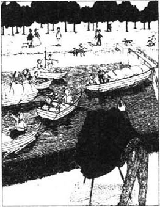
第二天一大早我们就离开了斯特雷特利。我们计划去卡拉姆，在那里过夜。从斯特雷特利到沃灵福德一带，河上风光平淡无奇。从克利夫以上，好长一段河面上没有一座水闸，对于此，大多数人很满意，因为这样，任何事情就容易多了。对我个人来说，我是十分喜欢水闸的。我还想起有一次乔治和我在一个水闸差点惹出祸来……
那天天气真好，水闸里挤满了船，有人在给我们照相，摄影师想借此把照片卖给水闸里的游客。起初，我没有看见摄影师，却突然看见乔治慌慌张张地把裤子拉平，把头发摆弄摆弄，又把帽子戴上。他坐下来，脸上装出一副和善，但又忧郁的表情，还拼命把两只脚藏起来。
我马上猜想他突然看见了自己认识的姑娘。我四下张望，看看她到底是谁，可是水闸里的人一个个都变成了木头人似的，一动不动，脸上的表情绷得紧紧的。所有的姑娘们都做出优雅的微笑状，所有的男人们都摆出一副勇敢、潇洒的表情。
后来，我看到了摄影师才恍然大悟。我还赶得上吗？我们的船在水闸最前一排，我可一定要在照片上显得好看才行。
于是，我赶快扭过身子，站在船头，仔细理了一下头发，尽量让自己显得英勇又机敏。
我们站在那儿，等待着拍照的关键时刻。这时，忽然我背后有人喊了起来。
“喂！瞧你的鼻子！”
我当然不能回头去看究竟是谁的鼻子，不过，我偷偷瞟了一眼乔治的鼻子，那鼻子好好的。我又使劲儿看看自己的鼻子，也是好端端的。
“瞧瞧你的鼻子！你这个傻瓜！”那人又扯大了嗓门儿叫道。
接着，又有一个声音喊道：“把你们的鼻子挪开，你们两个，带狗的！”
我们实在不能转身，因为摄影师马上就要拍照了。他们是在吆喝我们吗？我们的鼻子出什么问题了？干吗要我们把鼻子挪开呢？
现在，整个水闸里的人都咆哮起来了。从我们背后传来一个洪亮的声音：“看看你们的船！你们两个戴红帽子和黑帽子的家伙。你们要是动作再不快点，照片上会照上两个死人了！”
这时，我们才转身一看，看见我们的船鼻子卡在水闸前的木门里。水在不断升高，我们的船眼看就要翻了。我们赶紧使劲儿向闸门推，总算是把船推离了水闸，可我们两个摔了个仰面朝天。
照片出来时我们简直不成样子。因为恰在我们摔倒的一霎那，摄影师拍了照。我们脸上一副“我这是在哪儿啊？”和“出什么事了？”的表情，四只脚在空中乱舞。说句实在的，我们的脚几乎把照片占满了，没剩下多少风景好看了。
没有一个人买照片。他们说他们才不愿意买只有我们四只脚的照片呢。摄影师呢，也满心不快。
我们又驶过沃灵福德，多切斯特，在兜利夫顿·汉普登过夜，那是个风光十分绮丽的小村庄。
第二天早晨我们起得很早，因为我们想下午的时候赶到牛津。还不到八点半我们就吃完了早餐，通过了克利夫顿水闸。十二点半，我们又驶过了伊夫雷水闸。
可是从那里到牛津的那段水道是最难航行的。一开始，水流一会儿把你冲向右，一会儿冲向左；接着又把你冲到河中央，打三个转儿，一会儿我们的船撞上了很多别人的船；一会儿别人的船又挡了我们的道儿——总不免谩骂声起，恶语伤人。
还好，我们在牛津愉快地玩儿了两天。城里有很多狗，“元帅”到的第一天就打了十一次架；第二天又打了十四次。这下子可过足了瘾。
要是你打算从牛津出发开始河上旅行，最好还是带自己的船去（当然，带了别人的船去也可以，只要别人不察觉）。泰晤士河上在马洛以前租的船倒还不错：不会进太多的水，有坐的地方，配备也齐全。可这些船的外表都不是能让你出风头、摆架子的。租这种游船的人都是性格温和的人，喜欢停在树阴之下。他们大多清晨或者黄昏之后才划船，因为那会儿，没有多少人看他们。他们一旦看见熟人，就会跳出船，躲到树后面去。我还记得有一年夏天，我和几个朋友也租了那样一条船……
我们预先写信去订了一条船。我们到了船坞，报上自己的姓名。那个人说：“哦，对了。”接着，他又叫出来另一个人，“吉姆，去把那艘‘泰晤士河皇后号’拖来。”
五分钟之后，吉姆拖着一截古老的烂木头回来了。很显然是他刚才从地底下挖掘出来的，而且挖掘出土的时候还碰坏了许多地方。
我们问吉姆这玩意是什么。
“是‘泰晤士河皇后号’。”他回答说。
我们大声笑话着，然后其中一人说：“行了，快去把真船拖过来吧！”
可他们说，这的确是条真真正正的游船。
chapter-a109_ 16 The journey home
Chapter 16
The journey home
We left Oxford on the third day, to go back home. The weather changed, and, when we left Oxford, it was raining. It continued to rain, not heavily, but all the time.
When the sun is shining, the river turns everything into a golden dream. But when it rains, the river is brown and miserable.
It rained all day, and, at first, we pretended we were enjoying it. We said that it was a nice change. We added that it was good to see the river in all kinds of weather. Harris and I sang a song about how good it was to be free and to be able to enjoy the sun and the rain.
George thought it was much more serious, and he put up the umbrella.
Before lunch, he put the cover on the boat, and it stayed there all afternoon. We just left a little hole, so that we could see out. We stopped for the night, just before Day's lock, and I cannot say that we spent a happy evening.
The rain came down without stopping. Everything in the boat was wet. Supper was not a success. We were all tired of cold meat, and we talked about our favourite foods. When we passed the cold meat to Montmorency, he refused our offer. He went and sat at the other end of the boat, alone.
We played cards after supper. We played for about an hour and a half, and George won ten pence. Harris and I lost five pence each. We decided to stop then, because the game was getting too exciting.
After that we had some whisky, and we sat and talked. George told us about a man he had known. This man had slept on the river, in a wet boat, like ours, and it had made him very ill. Ten days later, the poor man died, in great pain. George said he was quite a young man, so it was very sad.
Then Harris remembered one of his friends who had camped out on a wet night. When he woke up the next morning, he was in great pain, and he was never able to walk again.
So then, of course, we began to talk about other illnesses. Harris said it would be very serious if one of us became ill because we were a long way from a doctor.
After this we really needed something to make us feel a bit happier, so George sang to us. That really made us cry.
After that we could think of nothing else to do, so we went to bed. Well... we undressed and we lay down in the boat. We tried to go to sleep but it was four hours before we did so. At five o'clock we all woke up again, so we got up and had breakfast.
The second day was the same as the first. It rained all day. We sat in our raincoats under the cover, and we travelled slowly along the river. I did try to sing again, but it was not a success.
However, we all agreed that we should continue our trip. We had come to enjoy ourselves for a fortnight on the river, and we were going to finish the trip. If it killed us — well, that would be a sad thing for our friends and families, but we would not give in to the weather.
'It's only two more days,' Harris said, 'and we are young and strong. Perhaps we'll be all right.'
At about four o'clock we began to discuss our plans for that evening. We were a little past Goring then, and we decided to go on to Pangbourne and spend the night there.
'Another happy evening,' George said.
We sat and thought about it. We would be in Pangbourne by five o'clock. We would finish our dinner by half past six. After that we could walk about the village in the rain, or we could sit in a dark little pub.
'It would be more interesting to go to the Alhambra Theatre in London,' Harris said, and he looked out at the sky.
'With supper afterwards at that little French restaurant,' I added.
'Yes, I'm almost sorry we've decided to stay on the boat,' Harris said. Then we were silent for a time.
'I know we've decided to stay and die on this boat,' George said, 'but there is a train which leaves Pangbourne soon after five o'clock. We could be in London in time to get something to eat, and afterwards we could go on to the theatre.'
Nobody said a word. We looked at each other, and we all felt badly about it. We did not speak, but we got out the bag. We looked up the river, and down the river. There was nobody there.
Twenty minutes later, three figures and an ashamed dog quietly left the nearest boathouse, and went towards the station.
We had told the boatman a lie. We had asked him to take care of the boat for us until nine o'clock the next morning. We said we would come back for it then. However, if (only 'if') something happened to stop us from coming back, then we would write to him.
We reached Paddington station at seven o'clock, and we drove straight to the restaurant. We had a light meal and left Montmorency there. Then we went to the theatre. For some reason everybody stared at us, and this made us very happy. Perhaps it was because of our interesting clothes, or because we looked so healthy.
Afterwards we went back to the restaurant, where supper was waiting for us.
We really did enjoy that supper. For ten days we had lived on cold meat and bread, and not much else. We ate and drank without speaking, and then we sat back and rested. We felt good, and thoughtful, and kind.
Then Harris, who was sitting next to the window, pulled back the curtain and looked out into the street. It was still raining, and it was dark and very wet. One or two people hurried past. The rain was running from their umbrellas, and the women were holding up their long skirts.
Harris picked up his glass.
'Well,' he said, 'we've had a good trip, and I'm very grateful to Old Father Thames. But I think we were right to give up and come back. Here's to Three Men well out of a Boat!'
And Montmorency stood on his back legs in front of the window, looked out into the night, and gave a short bark to show that he agreed.
favourite adj. a person or thing regarded with special liking. 偏爱的。
offer n. something given, proposed. 提供的东西。
play cards play games with cards. 玩牌。
camp v. sleep outside in the open air or in tents. 露营。
raincoat n. a waterproof coat for giving protection from rain. 雨衣。
fortnight n. two weeks. 两周。
give in yield, to abandon a claim, fight. 屈服。
theatre n. a place where plays, operas, etc. are presented. 剧院，戏院。
restaurant n. a place where meals can be bought and eaten. 餐厅。
ashamed adj. feeling shame, as from doing something bad, wrong, foolish. 害羞的，感到羞愧的。
curtain n. a piece of cloth. etc., sometimes arranged so that it can be drawn up or sideways, hung for decoration, as at a window. 窗帘。
give up to stop doing something; cease. 放弃。
返航归家
16 返航归家

第三天，我们从牛津启航回家。离开牛津的时候，天气变了，下起了雨。从那以后，雨一直在下，虽然不大，可却始终没有停过。
阳光灿烂的日子里，河水把一切都变成了金色的梦；可是天一下雨，河水变得浑浊而凄凉。
整天下着雨，起初，我们还装出一副怡然自得的样子。我们说换换口味也好，我们喜欢看不同天气下的河流是什么样子，哈里斯和我唱着歌，唱着自由多么美好，享受完了阳光享受小雨是多么美妙。
乔治却把事情看得严重得多，他一直撑着伞。
午餐之前，他挂起了篷布，整整挂了一下午。我们只留出一个孔，可以看到外面？在到达戴斯水闸之前，我们停船过夜。我得说那个晚上我们实在没有过好。
雨下个不停，船上的东西全部都淋湿了，晚餐自然是个失败。大家对冷肉都倒了胃口，便说起各自喜欢的食物。我们把冷肉递给“元帅”，它才不要呢。它走过去坐在船尾，孤零零地。
吃完晚饭，我们玩起了纸牌。玩了约摸有一个半小时，乔治赢了十个便士，我和哈里斯每人输了五个。我们觉得不能再玩了，因为我们已经赌得有点儿情绪激动了。
之后，我们又喝了些威士忌，坐下来聊天。乔治跟我们谈起他认识的一个人，也曾睡在河上一只潮湿的船里，像我们的一样。结果，得了重病，十天后就在难以忍受的病痛中死去。乔治说他还是个年轻人，一想起来就伤心。
接着，哈里斯也想起他的一个朋友在潮湿的夜里，在野外露营。第二天早上一觉醒来，发现自己痛楚难当，然后再也不会走路了。
于是，我们又很自然地谈起了其他各种病症。哈里斯说，如果我们有人得了病那可麻烦了，因为我们离医生可远着呐！
谈了这么多丧气话，我们真需要点儿东西提提精神，放松放松。所以乔治给我们唱歌听，可那歌唱得我们抱头痛哭。
再后来，我们想不起还有什么事好做，所以就去睡觉了。于是，我们脱了衣服，躺在船里。我们想合眼就睡，可足足有四个小时才迷糊着了。早晨五点，大家又全醒了。于是就起床，吃早饭。
第二天的天气，依然如故，雨下了一整天。我们裹着雨衣，坐在篷布底下，沿着河慢慢地漂。我还试着再唱支歌，可实在唱不下去。
不过，有一点我们一致同意——那就是一定要把旅行进行到底。我们来就是为了要在河上痛痛快快地玩两个星期，我们一定要善始善终，即使因此送了命！——当然，这对亲朋好友来说是件惨痛的事，但我们也绝不愿向天气屈服。
“就只有两天啦，”哈里斯说，“我们都年轻力壮，我们可能会安然无恙的。”
下午四点左右，我们开始讨论晚上的安排。我们刚过戈灵，决定再划一会儿到潘本过夜。
“又是幸福的一夜。”乔治说。
我们坐在那儿，想着晚上的安排：大概五点钟到潘本，六点半吃完晚饭，然后我们可以顶着雨在村子里转一转，或者在一家灯光幽暗的小酒馆里坐坐。
“啊，去伦敦的阿尔罕布拉戏院可比这儿有意思多了。”哈里斯说着，探出头看看外面的天色。
“然后再在那家法国小餐厅吃顿晚餐。”我又加了一句。
“是啊，我真后悔我们决定还要呆在这条船上。”哈里斯说。一度，大家都沉默不语。
“我明白咱们已经下决心呆在船上，死在这里，”乔治说，“不过五点钟马上有一趟火车离开潘本，我们也许能及时赶回伦敦，好好吃上一顿；然后还可以去戏院看戏。”
没人答话，大家面面相觑，对这个想法都感到汗颜。虽然没人说什么，可我们把包拿了出来。我们看看上游，看看下游，一个人都没有。
二十分钟后，三条人影和一只羞愧的狗离开了最近的一家船坞，奔向火车站。
我们向管船人撒了个谎。我们请他照看我们的船，明天早上九点我们会回来取的。要是（我们说“万一”），我们被意外绊住了脚，赶不回来，我们会写信告诉他的。
七点钟，我们赶到了帕丁顿车站，坐车径直去了餐厅。我们略微吃了点儿东西，把“元帅”留在那里。接着又去了戏院。可那儿的人不知为什么都盯着我们看，这让我们十分自豪。可能是因为我们有趣的着装，或是因为我们看上去十分健康。
看完戏，我们又回到餐厅，晚餐已经准备好了。
那顿饭我们吃得痛快极了。十天来，我们一直只靠冷肉、面包和其他一些不多的东西过活。我们边吃边喝，谁也顾不上说话。吃完饭，我们靠在椅子上，惬意地休息着，觉得一切都那么美好，仁慈，意味深长。
这时，坐在窗口的哈里斯拉开窗帘，向街上望去。天还下着雨，阴沉沉，湿漉漉的。一两个行人匆匆走过，雨水顺着他们的雨伞滴下来，女士们都拎起她们长长的裙子。
哈里斯端起杯子。
“不管怎么说，”他说道，“我们完成了一次愉快的旅行，我衷心感谢老父亲泰晤士河。我觉得咱们弃舟回来做得对！来吧，为三位下船的先生干杯！”
“元帅”站起身，站在窗前，凝望着窗外沉沉的黑夜，短短吠了一声，表示同意我们的祝酒辞。
Exercises
Exercises
A Checking your understanding
Chapters 1–4 Are these sentences true (T) or false (F)?
1 The writer felt better after he had been to the British Museum Library.
2 The three friends really were ill.
3 Harris did not want to go to the country because it was too quiet.
4 The three friends decided to sleep out every night.
5 They made a second list because the first list was too long.
6 J. had to pack the suitcase of clothes three times.
Chapters 5–8 How much can you remember? Check your answers.
1 What did George do while the other two were having breakfast?
2 How did Harris and the others finally get out of Hampton Court maze?
3 Who wanted to visit Hampton Church?
4 Why didn't George want to do any work on the boat when he arrived?
5 Who towed the boat up to Penton Hook?
Chapters 9–12 Find answers to these questions in the text.
1 Why did J. do nothing when George and Harris were fighting with the cover?
2 What happened to make J. go into the river?
3 Whose shirt fell in the river?
4 Why didn't the three friends stay at the first hotel they came to in Datchet?
5 Why didn't the three friends have their tinned fruit for lunch?
6 Why did Montmorency stop chasing the cat?
7 When the friends had no water, what did the lock-keeper tell them to do?
Chapters 13–16 Write answers to these questions.
1 What do you think happened when Harris stayed alone on the boat after supper?
2 How does J. feel about work?
3 Why did the three friends have to pay extra money to the woman who washed their clothes?
4 How many people said that they had caught the fish in the glass case?
5 Who saw the photographer first?
6 Why did the three friends go back to London by train?
B Working with language
1 Put these sentences in the right order. Then check your order with Chapter 8.
1 They pull the boat much too fast.
2 Soon they stop again, because they want their hats or because they have seen a cow.
3 You always need three girls to tow a boat.
4 When they do that, the boat goes out into the middle of the river and starts to turn round.
5 They usually begin by tying themselves up in the rope.
6 So you have to shout at them, 'Keep the boat moving!', and they start pulling again.
7 After a few minutes they get tired of running, and stop suddenly.
8 When they finally get the rope straight, they always start by running.
2 Complete these sentences with information from Chapter 10.
1 George and Harris would not swim in the river because...
2 J. wanted to splash some water over himself so...
3 However, the branch broke, and J...
4 When J. dropped the shirt into the water, George...
5 J. began to laugh when he looked at the shirt and...
3 Use these linking words to complete the Passage. Check your answers with Chapter 16.
so and but before after
..... that, we could think of nothing else to do, ..... we went to bed. Well, we undressed..... we lay down in the boat. We tried to go to sleep, ..... it was four hours ..... we did so. At five o'clock we all woke up again, ..... we got up ..... had breakfast.
C Activities
1 Which was the funniest part of the book? Tell the story in your own words.
2 Imagine that you are George or Harris. Write a letter to a friend and describe what happened when you tried to find a hotel in Datchet.
3 Write a short description of one of the three men.
4 Would you like to have a boating holiday on a river? Describe the kind of boat you would like, the places you would visit, and the things you would take with you (for example, a tin-opener!).
Glossary
Glossary
aground (adv) touching the bottom of the river in shallow water
bank (river) the ground on each side of a river
bark (n) the short quick sound that a dog makes
bedclothes the blankets and sheets on a bed
blow (n) hitting someone or something hard
camp (v) to sleep outside in the open air or in tents
cap (n) a kind of hat worn by men
case a kind of box with glass in the front
fool (n) a very stupid person
hammer (n) a piece of wood with a heavy metal head used for hitting things
hedge (n) a 'wall' of small trees which have been planted close together
housekeeper a person who takes care of a house
keeper a person who takes care of something
landlord the owner of a pub
lock (n) a place on a river between gates where boats are raised or lowered to a different level
lock-keeper a person who looks after a lock on a river
maze lots of high hedges with narrow paths between them; people have to find their way in and out, and usually get lost (see the picture)
nail (n) a small thin piece of metal with a sharp end
nest (n) a place that a bird makes to have its eggs
nose (n) (in this story) the front of a boat
piano a large musical instrument with black and white keys that you press to make music
rat a little grey animal with a long tail
rope very thick, strong string, used for tying things
splash (v) to make water fly about and make things wet
steer to turn a wheel or handle to guide a boat, car, etc.
stick (v) to fix or fasten one thing to another thing
stove a small oil cooker, used for cooking outdoors
stroke (v) to move the hand gently across something, again and again
stuck past tense of 'to stick'
swan a big white bird with a long neck (see the picture)
symptom a sign of illness
teapot a pot in which tea is made
tent a small house made of cloth over poles
tin a metal container for keeping foods
tin-opener the thing used to cut open a tin
tow to pull a boat, car, etc. along behind you with a rope
yell (v) to shout very loudly
封底
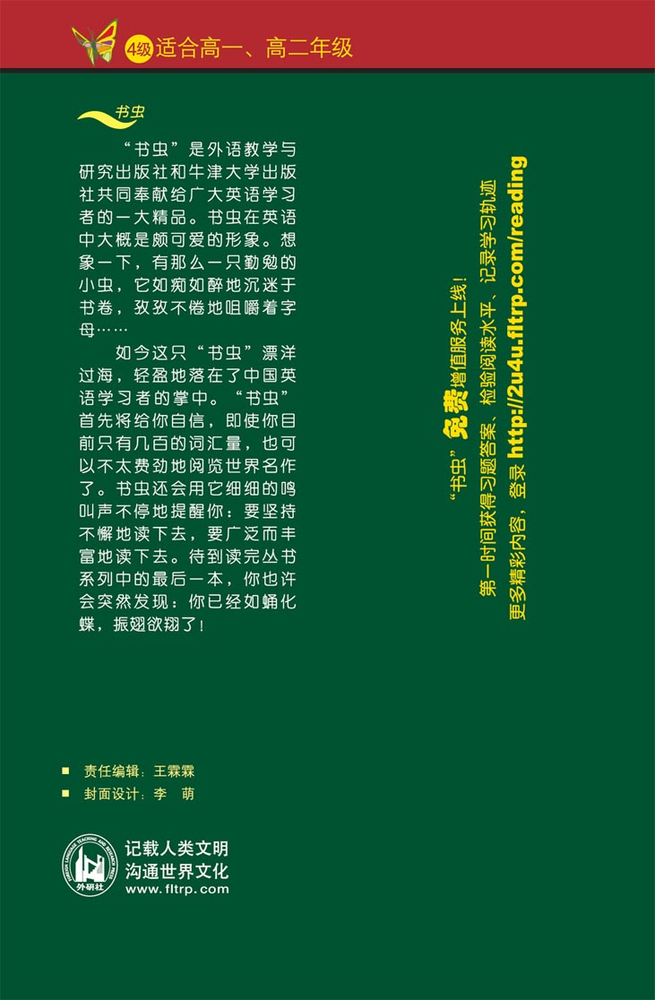